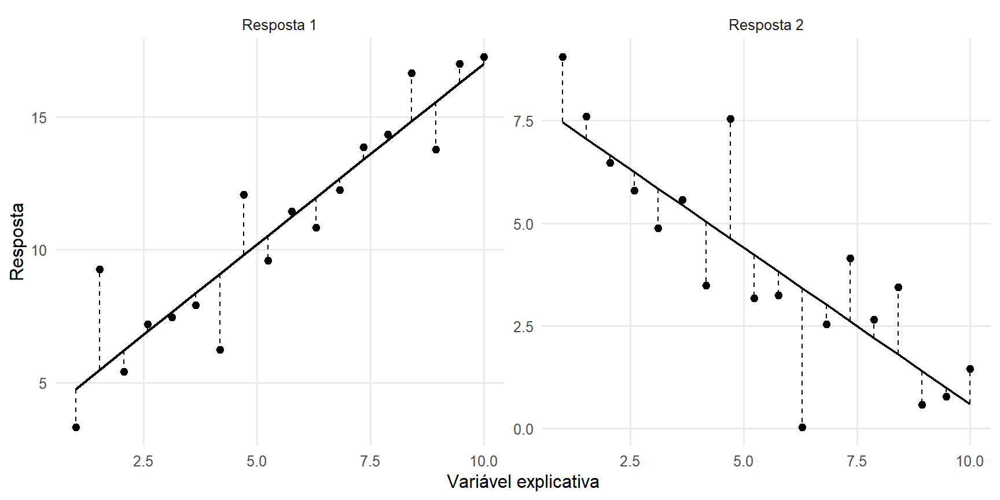

11 Modelo Linear Multivariado e Hipóteses Lineares
O Capítulo 10 desenvolveu a estimação do vetor de médias e da matriz de covariâncias a partir de uma amostra aleatória multivariada. Nesse contexto, as unidades foram consideradas como provenientes de uma população com o mesmo vetor de médias.
O modelo linear multivariado amplia essa estrutura permitindo que o vetor de médias dependa de características conhecidas das unidades. Uma mesma formulação pode representar, por exemplo, uma regressão com várias respostas, efeitos associados a fatores ou covariáveis e diferentes estruturas de médias.
O modelo é escrito como
\[ \boldsymbol{\mathcal Y} = \mathbf Z\mathbf B + \boldsymbol{\mathcal E}, \]
em que:
- \(\boldsymbol{\mathcal Y}\in\mathbb R^{n\times p}\) é a matriz aleatória de respostas;
- \(\mathbf Z\in\mathbb R^{n\times q}\) é a matriz de delineamento;
- \(\mathbf B\in\mathbb R^{q\times p}\) é a matriz de parâmetros;
- \(\boldsymbol{\mathcal E}\in\mathbb R^{n\times p}\) é a matriz aleatória de erros.
O objetivo deste capítulo é formular esse modelo, estudar a estimação de \(\mathbf B\), interpretar valores ajustados e resíduos por meio de projeções, construir a SSCP residual, estimar a matriz de covariâncias dos erros e representar hipóteses lineares sobre parâmetros e combinações das respostas (Rencher; Christensen, 2012).
As distribuições amostrais utilizadas para construir testes e regiões de confiança serão desenvolvidas no Capítulo 12. As técnicas multivariadas que utilizam o modelo linear, entre elas a MANOVA, serão formuladas posteriormente no Módulo 3.
11.1 Formulação do modelo linear multivariado
11.1.1 Resposta vetorial e matriz de respostas
No modelo linear univariado, cada unidade fornece uma única resposta. No caso multivariado, a unidade \(i\) fornece simultaneamente
\[ \boldsymbol{\mathsf Y}_i = \begin{bmatrix} Y_{i1}\\ Y_{i2}\\ \vdots\\ Y_{ip} \end{bmatrix} \in \mathbb R^p. \tag{11.1}\]
As componentes podem apresentar dependência. O modelo deve, portanto, representar simultaneamente:
- a estrutura das médias das \(p\) respostas;
- a variabilidade de cada resposta;
- as covariâncias entre respostas observadas na mesma unidade.
Considere
\[ \mathbf z_i = \begin{bmatrix} z_{i1}\\ \vdots\\ z_{iq} \end{bmatrix} \in \mathbb R^q, \]
contendo os valores dos \(q\) termos do modelo para a unidade \(i\).
A matriz de parâmetros é
\[ \mathbf B = \begin{bmatrix} \beta_{11} & \beta_{12} & \cdots & \beta_{1p}\\ \beta_{21} & \beta_{22} & \cdots & \beta_{2p}\\ \vdots & \vdots & \ddots & \vdots\\ \beta_{q1} & \beta_{q2} & \cdots & \beta_{qp} \end{bmatrix} \in \mathbb R^{q\times p}. \tag{11.2}\]
A coluna \(j\) de \(\mathbf B\) contém os coeficientes associados à resposta \(j\). A linha \(h\) reúne os coeficientes do termo \(h\) para as \(p\) respostas.
A média condicional do vetor de respostas da unidade \(i\) é
\[ E \left( \boldsymbol{\mathsf Y}_i \mid \mathbf Z \right) = \mathbf B^\top \mathbf z_i. \tag{11.3}\]
Equivalentemente, em forma de vetor linha,
\[ E \left( \boldsymbol{\mathsf Y}_i^\top \mid \mathbf Z \right) = \mathbf z_i^\top \mathbf B. \]
Definição 11.1 (Modelo linear multivariado para uma unidade) O vetor de respostas da unidade \(i\) é representado por
\[ \boldsymbol{\mathsf Y}_i = \mathbf B^\top \mathbf z_i + \boldsymbol{\varepsilon}_i, \tag{11.4}\]
em que
\[ E \left( \boldsymbol{\varepsilon}_i \mid \mathbf Z \right) = \mathbf0. \]
Componente a componente,
\[ Y_{ij} = \mathbf z_i^\top \boldsymbol{\beta}_j + \varepsilon_{ij}, \qquad j=1,\ldots,p, \tag{11.5}\]
em que \(\boldsymbol{\beta}_j\) é a coluna \(j\) de \(\mathbf B\).
As equações das diferentes respostas compartilham a mesma matriz de delineamento. O caráter multivariado do modelo decorre da análise conjunta dessas respostas e da estrutura de covariâncias dos respectivos erros.
Para reunir as \(n\) unidades, defina a matriz aleatória
Definição 11.2 (Matriz aleatória de respostas) \[ \boldsymbol{\mathcal Y} = \begin{bmatrix} \boldsymbol{\mathsf Y}_1^\top\\ \boldsymbol{\mathsf Y}_2^\top\\ \vdots\\ \boldsymbol{\mathsf Y}_n^\top \end{bmatrix} = \begin{bmatrix} Y_{11} & \cdots & Y_{1p}\\ Y_{21} & \cdots & Y_{2p}\\ \vdots & \ddots & \vdots\\ Y_{n1} & \cdots & Y_{np} \end{bmatrix} \in \mathbb R^{n\times p}. \tag{11.6}\]
Após a observação,
\[ \mathbf Y = \begin{bmatrix} \mathbf y_1^\top\\ \vdots\\ \mathbf y_n^\top \end{bmatrix} \in \mathbb R^{n\times p}. \tag{11.7}\]
A matriz de delineamento é
\[ \mathbf Z = \begin{bmatrix} \mathbf z_1^\top\\ \mathbf z_2^\top\\ \vdots\\ \mathbf z_n^\top \end{bmatrix} \in \mathbb R^{n\times q}. \tag{11.8}\]
Neste capítulo, a inferência é formulada condicionalmente a \(\mathbf Z\). Assim, a matriz de delineamento é tratada como conhecida. Essa convenção abrange tanto delineamentos fixados previamente quanto análises condicionais aos valores observados das variáveis explicativas.
11.1.2 Estrutura matricial do modelo
Organize os vetores de erros nas linhas de
\[ \boldsymbol{\mathcal E} = \begin{bmatrix} \boldsymbol{\varepsilon}_1^\top\\ \vdots\\ \boldsymbol{\varepsilon}_n^\top \end{bmatrix} \in \mathbb R^{n\times p}. \tag{11.9}\]
Definição 11.3 (Modelo linear multivariado) O modelo linear multivariado é
\[ \boldsymbol{\mathcal Y} = \mathbf Z\mathbf B + \boldsymbol{\mathcal E}. \tag{11.10}\]
A matriz de médias condicionais é
\[ E \left( \boldsymbol{\mathcal Y} \mid \mathbf Z \right) = \mathbf Z\mathbf B. \tag{11.11}\]
Portanto, a estrutura sistemática do modelo pertence ao espaço coluna de \(\mathbf Z\). Cada coluna de
\[ \mathbf Z\mathbf B \]
é uma combinação linear das colunas do delineamento.
Se
\[ r = \operatorname{posto} \left( \mathbf Z \right), \tag{11.12}\]
então
\[ r\leq\min(n,q). \]
Quando
\[ r=q, \]
as colunas de \(\mathbf Z\) são linearmente independentes e a parametrização usual de \(\mathbf B\) é identificada. Quando
\[ r<q, \]
a matriz de parâmetros não é única, embora determinadas funções de \(\mathbf B\) e a própria matriz de médias \(\mathbf Z\mathbf B\) possam ser unicamente determinadas. Esse caso será desenvolvido na seção sobre estimabilidade.
11.1.3 Estrutura de médias e covariâncias residuais
A primeira condição do modelo é
Definição 11.4 (Média residual nula) \[ E \left( \boldsymbol{\varepsilon}_i \mid \mathbf Z \right) = \mathbf0, \qquad i=1,\ldots,n. \tag{11.13}\]
Consequentemente,
\[ E \left( \boldsymbol{\mathsf Y}_i \mid \mathbf Z \right) = \mathbf B^\top\mathbf z_i. \]
A segunda condição descreve a dependência entre as respostas de uma mesma unidade e entre unidades distintas.
Definição 11.5 (Estrutura de covariâncias dos erros) Assume-se
\[ \operatorname{Cov} \left( \boldsymbol{\varepsilon}_i \mid \mathbf Z \right) = \boldsymbol{\Sigma}, \qquad i=1,\ldots,n, \tag{11.14}\]
e
\[ \operatorname{Cov} \left( \boldsymbol{\varepsilon}_i, \boldsymbol{\varepsilon}_\ell \mid \mathbf Z \right) = \mathbf0, \qquad i\neq\ell. \tag{11.15}\]
A matriz
\[ \boldsymbol{\Sigma} = \begin{bmatrix} \sigma_{11} & \cdots & \sigma_{1p}\\ \vdots & \ddots & \vdots\\ \sigma_{p1} & \cdots & \sigma_{pp} \end{bmatrix} \]
é a matriz de covariâncias residuais entre as \(p\) respostas.
Assim,
\[ \operatorname{Var} \left( Y_{ij} \mid \mathbf Z \right) = \sigma_{jj}, \]
e, para duas respostas da mesma unidade,
\[ \operatorname{Cov} \left( Y_{ij}, Y_{ik} \mid \mathbf Z \right) = \sigma_{jk}. \]
A expressão “covariância residual” indica a variabilidade que permanece após a estrutura de médias \(\mathbf Z\mathbf B\) ter sido especificada. Ela não deve ser confundida com a covariância marginal das respostas quando suas médias variam entre unidades.
As condições anteriores implicam que a dependência entre respostas é permitida dentro de uma unidade, enquanto erros de unidades distintas são não correlacionados. Sob normalidade conjunta, a covariância cruzada nula entre unidades implica independência, conforme desenvolvido no Capítulo 9.
11.1.4 Forma vetorizada
O operador \(\operatorname{vec}\), o produto de Kronecker e a identidade
\[ \operatorname{vec} \left( \mathbf A\mathbf X\mathbf C \right) = \left( \mathbf C^\top\otimes\mathbf A \right) \operatorname{vec} \left( \mathbf X \right) \]
foram definidos em Definição 7.9, Definição 7.10 e Proposição 7.15. Não é necessário reconstruir essas operações aqui.
Aplicando a identidade ao termo sistemático,
\[ \operatorname{vec} \left( \mathbf Z\mathbf B \right) = \left( \mathbf I_p\otimes\mathbf Z \right) \operatorname{vec} \left( \mathbf B \right). \tag{11.16}\]
Portanto,
\[ \operatorname{vec} \left( \boldsymbol{\mathcal Y} \right) = \left( \mathbf I_p\otimes\mathbf Z \right) \operatorname{vec} \left( \mathbf B \right) + \operatorname{vec} \left( \boldsymbol{\mathcal E} \right). \tag{11.17}\]
Como a vetorização é feita por colunas, a estrutura de covariâncias dos erros é
Proposição 11.1 (Covariância do erro vetorizado) Sob Definição 11.5,
\[ \operatorname{Cov} \left[ \operatorname{vec} \left( \boldsymbol{\mathcal E} \right) \mid \mathbf Z \right] = \boldsymbol{\Sigma} \otimes \mathbf I_n. \tag{11.18}\]
A ordem dos fatores é importante. A vetorização por colunas agrupa primeiro as \(n\) observações da resposta 1, depois as \(n\) observações da resposta 2 e assim sucessivamente. Por isso, a matriz de covariâncias entre respostas ocupa o primeiro fator:
\[ \boldsymbol{\Sigma} \otimes \mathbf I_n. \]
Consequentemente,
\[ \operatorname{Cov} \left[ \operatorname{vec} \left( \boldsymbol{\mathcal Y} \right) \mid \mathbf Z \right] = \boldsymbol{\Sigma} \otimes \mathbf I_n. \tag{11.19}\]
Essa representação mostra que o modelo linear multivariado pode ser visto como um modelo linear para um vetor de dimensão \(np\), com uma estrutura de covariâncias específica.
11.1.5 Distribuição normal matricial
A normalidade não é necessária para definir o modelo linear multivariado nem para obter diversas propriedades dos estimadores de mínimos quadrados. Ela fornece, entretanto, uma estrutura probabilística que permitirá obter resultados exatos no Capítulo 12.
A distribuição normal matricial será parametrizada pela média, por uma matriz de covariâncias entre linhas e por uma matriz de covariâncias entre colunas (Gupta; Nagar, 1999).
Definição 11.6 (Distribuição normal matricial) Se
\[ \boldsymbol{\mathcal A} \in \mathbb R^{n\times p}, \]
diz-se que
\[ \boldsymbol{\mathcal A} \sim N_{n\times p} \left( \boldsymbol{\Xi}, \mathbf U, \mathbf V \right) \]
quando
\[ \operatorname{vec} \left( \boldsymbol{\mathcal A} \right) \sim N_{np} \left[ \operatorname{vec} \left( \boldsymbol{\Xi} \right), \mathbf V\otimes\mathbf U \right]. \tag{11.20}\]
Aqui,
\[ \boldsymbol{\Xi} \in \mathbb R^{n\times p}, \qquad \mathbf U \in \mathbb R^{n\times n}, \qquad \mathbf V \in \mathbb R^{p\times p}. \]
Nesta parametrização, \(\mathbf U\) descreve a estrutura entre linhas e \(\mathbf V\) a estrutura entre colunas. A representação não identifica separadamente uma escala global em \(\mathbf U\) e \(\mathbf V\), pois, para qualquer \(c>0\), a substituição
\[ \mathbf U^\ast = c\mathbf U \]
e
\[ \mathbf V^\ast = \frac{1}{c}\mathbf V \]
não altera a matriz de covariâncias vetorizada:
\[ \mathbf V^\ast \otimes \mathbf U^\ast = \left( \frac{1}{c}\mathbf V \right) \otimes (c\mathbf U) = \mathbf V\otimes\mathbf U. \]
No modelo linear multivariado, a escolha
\[ \mathbf U = \mathbf I_n \]
fixa essa escala e expressa a independência entre unidades.
Definição 11.7 (Modelo linear normal multivariado) O modelo linear normal multivariado é definido por
\[ \boldsymbol{\mathcal Y} = \mathbf Z\mathbf B + \boldsymbol{\mathcal E}, \]
com
\[ \boldsymbol{\mathcal E} \mid \mathbf Z \sim N_{n\times p} \left( \mathbf0, \mathbf I_n, \boldsymbol{\Sigma} \right). \tag{11.21}\]
Equivalentemente,
\[ \boldsymbol{\mathcal Y} \mid \mathbf Z \sim N_{n\times p} \left( \mathbf Z\mathbf B, \mathbf I_n, \boldsymbol{\Sigma} \right). \tag{11.22}\]
Pela definição da normal matricial,
\[ \operatorname{vec} \left( \boldsymbol{\mathcal Y} \right) \mid \mathbf Z \sim N_{np} \left[ \left( \mathbf I_p\otimes\mathbf Z \right) \operatorname{vec} \left( \mathbf B \right), \boldsymbol{\Sigma}\otimes\mathbf I_n \right]. \tag{11.23}\]
A mesma estrutura pode ser lida por unidade:
\[ \boldsymbol{\mathsf Y}_i \mid \mathbf Z \sim N_p \left( \mathbf B^\top\mathbf z_i, \boldsymbol{\Sigma} \right), \qquad i=1,\ldots,n, \tag{11.24}\]
com independência condicional entre as unidades.
A matriz \(\boldsymbol{\Sigma}\) continua desempenhando o papel estabelecido nos Capítulos 8 e 9: suas diagonais são as variâncias residuais das respostas e seus elementos fora da diagonal descrevem a dependência linear residual entre elas.
Para uma resposta específica \(j\), a coluna correspondente satisfaz
\[ \boldsymbol{\mathsf Y}_{\cdot j} \mid \mathbf Z \sim N_n \left( \mathbf Z\boldsymbol{\beta}_j, \sigma_{jj}\mathbf I_n \right). \tag{11.25}\]
Para duas respostas \(j\) e \(k\),
\[ \operatorname{Cov} \left( \boldsymbol{\mathsf Y}_{\cdot j}, \boldsymbol{\mathsf Y}_{\cdot k} \mid \mathbf Z \right) = \sigma_{jk} \mathbf I_n. \tag{11.26}\]
Assim, ajustar separadamente as \(p\) equações produz os mesmos estimadores de mínimos quadrados para os coeficientes quando todas utilizam a mesma matriz \(\mathbf Z\). A modelagem conjunta torna-se necessária para representar a covariância entre as respostas e para formular inferência sobre funções que envolvem simultaneamente diferentes colunas de \(\mathbf B\).
Quando
\[ \boldsymbol{\Sigma} \succ \mathbf0, \]
a log-verossimilhança, a menos de termos que não dependem dos parâmetros, pode ser escrita como
\[ \begin{aligned} \ell \left( \mathbf B, \boldsymbol{\Sigma} \right) &= -\frac{n}{2} \log \det \left( \boldsymbol{\Sigma} \right) \\ &\quad - \frac{1}{2} \operatorname{tr} \left[ \boldsymbol{\Sigma}^{-1} \left( \boldsymbol{\mathcal Y} - \mathbf Z\mathbf B \right)^\top \left( \boldsymbol{\mathcal Y} - \mathbf Z\mathbf B \right) \right]. \end{aligned} \tag{11.27}\]
A expressão combina duas estruturas já desenvolvidas: log-determinante e traço envolvendo uma matriz inversa. As regras de diferenciação correspondentes foram estabelecidas no Capítulo 7 e serão utilizadas somente quando necessárias na estimação.
11.1.6 Transformações da resposta
Uma transformação linear das respostas preserva a estrutura do modelo.
Considere
\[ \boldsymbol{\mathsf W}_i = \mathbf A^\top \boldsymbol{\mathsf Y}_i, \]
com
\[ \mathbf A \in \mathbb R^{p\times s}. \]
Em forma matricial,
\[ \boldsymbol{\mathcal W} = \boldsymbol{\mathcal Y}\mathbf A. \]
Logo,
\[ \boldsymbol{\mathcal W} = \mathbf Z \left( \mathbf B\mathbf A \right) + \boldsymbol{\mathcal E}\mathbf A. \tag{11.28}\]
A matriz de parâmetros transformada é
\[ \mathbf B_W = \mathbf B\mathbf A, \]
e a matriz de covariâncias residuais é
\[ \boldsymbol{\Sigma}_W = \mathbf A^\top \boldsymbol{\Sigma} \mathbf A, \]
em concordância com Proposição 8.6.
Sob normalidade,
\[ \boldsymbol{\mathcal W} \mid \mathbf Z \sim N_{n\times s} \left( \mathbf Z\mathbf B\mathbf A, \mathbf I_n, \mathbf A^\top \boldsymbol{\Sigma} \mathbf A \right). \tag{11.29}\]
Essa propriedade será utilizada posteriormente para formular hipóteses sobre combinações lineares das respostas.
O modelo está agora especificado em termos de sua estrutura de médias e de covariâncias. A próxima etapa é estimar a matriz de parâmetros \(\mathbf B\) a partir da matriz observada de respostas.
11.2 Estimação da matriz de parâmetros
A estimação de \(\mathbf B\) consiste em determinar a estrutura de médias
\[ \mathbf Z\mathbf B \]
que melhor aproxima a matriz observada de respostas \(\mathbf Y\) segundo o critério adotado.
Como todas as respostas utilizam a mesma matriz de delineamento, a estimação pode ser realizada simultaneamente. Cada coluna de \(\mathbf B\) corresponde aos coeficientes de uma resposta, mas a formulação matricial permite preservar a dependência entre as respostas e preparar a estimação conjunta de sua matriz de covariâncias residual (Rencher; Christensen, 2012).
11.2.1 Mínimos quadrados
Considere uma matriz candidata
\[ \mathbf G \in \mathbb R^{q\times p}. \]
A matriz de resíduos correspondente é
\[ \mathbf Y-\mathbf Z\mathbf G. \]
Definição 11.8 (Critério de mínimos quadrados multivariado) O critério de mínimos quadrados é
\[ Q \left( \mathbf G \right) = \left\| \mathbf Y-\mathbf Z\mathbf G \right\|_F^2. \tag{11.30}\]
Equivalentemente,
\[ Q \left( \mathbf G \right) = \operatorname{tr} \left[ \left( \mathbf Y-\mathbf Z\mathbf G \right)^\top \left( \mathbf Y-\mathbf Z\mathbf G \right) \right]. \tag{11.31}\]
A norma de Frobenius foi definida em Definição 6.7. Neste problema,
\[ Q \left( \mathbf G \right) = \sum_{j=1}^{p} \left\| \mathbf y_{\cdot j} - \mathbf Z\mathbf g_j \right\|^2, \tag{11.32}\]
em que \(\mathbf y_{\cdot j}\) é a coluna \(j\) de \(\mathbf Y\) e \(\mathbf g_j\) é a coluna correspondente de \(\mathbf G\).
Portanto, minimizar \(Q(\mathbf G)\) equivale a minimizar simultaneamente as somas de quadrados residuais das \(p\) respostas.
O critério não utiliza diretamente as covariâncias fora da diagonal de \(\boldsymbol{\Sigma}\). Essas covariâncias serão relevantes para:
- a covariância entre estimadores associados a respostas distintas;
- a estimação da matriz de covariâncias residual;
- hipóteses envolvendo simultaneamente diferentes respostas;
- os resultados inferenciais desenvolvidos no Capítulo 12.
As equações normais e sua derivação por cálculo matricial foram estabelecidas em Definição 3.21 e Proposição 7.6. Aplicadas ao modelo atual, elas assumem a forma
\[ \mathbf Z^\top \mathbf Z \widehat{\mathbf B}_{\mathrm{obs}} = \mathbf Z^\top \mathbf Y. \tag{11.33}\]
Equivalentemente,
\[ \mathbf Z^\top \left( \mathbf Y- \mathbf Z \widehat{\mathbf B}_{\mathrm{obs}} \right) = \mathbf 0_{q\times p}. \tag{11.34}\]
Se
\[ \widehat{\mathbf U} = \mathbf Y - \mathbf Z \widehat{\mathbf B}_{\mathrm{obs}}, \]
então
\[ \mathbf Z^\top \widehat{\mathbf U} = \mathbf0. \tag{11.35}\]
Cada coluna da matriz de resíduos é, portanto, ortogonal ao espaço coluna de \(\mathbf Z\). Essa é a aplicação, ao modelo multivariado, da geometria de mínimos quadrados desenvolvida no Módulo 1.
11.2.2 Estimador sob posto completo
Suponha
\[ \operatorname{posto} \left( \mathbf Z \right) = q. \tag{11.36}\]
Nesse caso,
\[ q\leq n \]
e
\[ \mathbf Z^\top\mathbf Z \succ \mathbf0. \]
Proposição 11.2 (Estimador de mínimos quadrados sob posto completo) Se
\[ \operatorname{posto} \left( \mathbf Z \right) = q, \]
o estimador de mínimos quadrados de \(\mathbf B\) é
\[ \widehat{\mathbf B} = \left( \mathbf Z^\top \mathbf Z \right)^{-1} \mathbf Z^\top \boldsymbol{\mathcal Y}. \tag{11.37}\]
Após a observação das respostas,
\[ \widehat{\mathbf B}_{\mathrm{obs}} = \left( \mathbf Z^\top \mathbf Z \right)^{-1} \mathbf Z^\top \mathbf Y. \tag{11.38}\]
A unicidade do minimizador decorre da definição positiva de
\[ \mathbf Z^\top\mathbf Z. \]
A convexidade do critério e a caracterização do minimizador global por meio das equações normais foram desenvolvidas em Proposição 7.9 e não precisam ser novamente demonstradas aqui.
Para a resposta \(j\), a coluna correspondente é
\[ \widehat{\boldsymbol{\beta}}_j = \left( \mathbf Z^\top \mathbf Z \right)^{-1} \mathbf Z^\top \boldsymbol{\mathsf Y}_{\cdot j}, \tag{11.39}\]
em que
\[ \boldsymbol{\mathsf Y}_{\cdot j} = \begin{bmatrix} Y_{1j}\\ \vdots\\ Y_{nj} \end{bmatrix}. \]
Assim, cada coluna de \(\widehat{\mathbf B}\) coincide com o estimador de mínimos quadrados obtido para a resposta correspondente. A formulação matricial reúne esses estimadores em um único objeto.
11.2.3 Esperança e matriz de covariâncias
Substituindo
\[ \boldsymbol{\mathcal Y} = \mathbf Z\mathbf B + \boldsymbol{\mathcal E} \]
em Equação 11.37,
\[ \begin{aligned} \widehat{\mathbf B} &= \left( \mathbf Z^\top \mathbf Z \right)^{-1} \mathbf Z^\top \left( \mathbf Z\mathbf B + \boldsymbol{\mathcal E} \right) \\ &= \mathbf B + \left( \mathbf Z^\top \mathbf Z \right)^{-1} \mathbf Z^\top \boldsymbol{\mathcal E}. \end{aligned} \tag{11.40}\]
A segunda parcela representa o erro de estimação.
Proposição 11.3 (Esperança e covariância do estimador da matriz de parâmetros) Considere
\[ E \left( \boldsymbol{\mathcal E} \mid \mathbf Z \right) = \mathbf0 \]
e
\[ \operatorname{Cov} \left[ \operatorname{vec} \left( \boldsymbol{\mathcal E} \right) \mid \mathbf Z \right] = \boldsymbol{\Sigma} \otimes \mathbf I_n. \]
Se
\[ \operatorname{posto} \left( \mathbf Z \right) = q, \]
então
\[ E \left( \widehat{\mathbf B} \mid \mathbf Z \right) = \mathbf B \tag{11.41}\]
e
\[ \operatorname{Cov} \left[ \operatorname{vec} \left( \widehat{\mathbf B} \right) \mid \mathbf Z \right] = \boldsymbol{\Sigma} \otimes \left( \mathbf Z^\top \mathbf Z \right)^{-1}. \tag{11.42}\]
Comprovação. De Equação 11.40,
\[ E \left( \widehat{\mathbf B} \mid \mathbf Z \right) = \mathbf B + \left( \mathbf Z^\top \mathbf Z \right)^{-1} \mathbf Z^\top E \left( \boldsymbol{\mathcal E} \mid \mathbf Z \right), \]
de modo que
\[ E \left( \widehat{\mathbf B} \mid \mathbf Z \right) = \mathbf B. \]
Para a matriz de covariâncias, defina
\[ \mathbf A_Z = \left( \mathbf Z^\top \mathbf Z \right)^{-1} \mathbf Z^\top. \]
Então,
\[ \widehat{\mathbf B} - \mathbf B = \mathbf A_Z \boldsymbol{\mathcal E}. \]
Utilizando Proposição 7.15,
\[ \operatorname{vec} \left( \widehat{\mathbf B} - \mathbf B \right) = \left( \mathbf I_p \otimes \mathbf A_Z \right) \operatorname{vec} \left( \boldsymbol{\mathcal E} \right). \]
Logo,
\[ \begin{aligned} & \operatorname{Cov} \left[ \operatorname{vec} \left( \widehat{\mathbf B} \right) \mid \mathbf Z \right] \\ &= \left( \mathbf I_p \otimes \mathbf A_Z \right) \left( \boldsymbol{\Sigma} \otimes \mathbf I_n \right) \left( \mathbf I_p \otimes \mathbf A_Z^\top \right) \\ &= \boldsymbol{\Sigma} \otimes \left( \mathbf A_Z\mathbf A_Z^\top \right). \end{aligned} \]
Como
\[ \mathbf A_Z\mathbf A_Z^\top = \left( \mathbf Z^\top \mathbf Z \right)^{-1}, \]
obtém-se Equação 11.42.
O resultado mostra duas fontes distintas de variabilidade:
\[ \boldsymbol{\Sigma} \]
descreve a variabilidade residual e a associação entre as respostas, enquanto
\[ \left( \mathbf Z^\top\mathbf Z \right)^{-1} \]
descreve a contribuição do delineamento para a precisão dos coeficientes.
Para duas respostas \(j\) e \(k\),
\[ \operatorname{Cov} \left( \widehat{\boldsymbol{\beta}}_j, \widehat{\boldsymbol{\beta}}_k \mid \mathbf Z \right) = \sigma_{jk} \left( \mathbf Z^\top \mathbf Z \right)^{-1}. \tag{11.43}\]
Para \(j=k\),
\[ \operatorname{Cov} \left( \widehat{\boldsymbol{\beta}}_j \mid \mathbf Z \right) = \sigma_{jj} \left( \mathbf Z^\top \mathbf Z \right)^{-1}. \tag{11.44}\]
Assim, estimadores associados a respostas diferentes são correlacionados sempre que os erros dessas respostas apresentam covariância residual diferente de zero.
Mais geralmente, para
\[ \mathbf c \in \mathbb R^q \qquad \text{e} \qquad \mathbf m \in \mathbb R^p, \]
a combinação escalar
\[ \mathbf c^\top \mathbf B \mathbf m \]
é estimada por
\[ \mathbf c^\top \widehat{\mathbf B} \mathbf m. \]
Sua variância condicional é
\[ \operatorname{Var} \left( \mathbf c^\top \widehat{\mathbf B} \mathbf m \mid \mathbf Z \right) = \left[ \mathbf c^\top \left( \mathbf Z^\top \mathbf Z \right)^{-1} \mathbf c \right] \left( \mathbf m^\top \boldsymbol{\Sigma} \mathbf m \right). \tag{11.45}\]
A expressão separa o papel do delineamento do papel da variabilidade da combinação de respostas. Essa estrutura será retomada na formulação das hipóteses lineares.
11.2.4 Relação com máxima verossimilhança
Sob o modelo linear normal multivariado, a log-verossimilhança foi escrita em Equação 11.27 como
\[ \begin{aligned} \ell \left( \mathbf B, \boldsymbol{\Sigma} \right) &= -\frac{n}{2} \log \det \left( \boldsymbol{\Sigma} \right) \\ &\quad - \frac{1}{2} \operatorname{tr} \left[ \boldsymbol{\Sigma}^{-1} \left( \boldsymbol{\mathcal Y} - \mathbf Z\mathbf B \right)^\top \left( \boldsymbol{\mathcal Y} - \mathbf Z\mathbf B \right) \right], \end{aligned} \]
a menos de termos constantes.
Para \(\boldsymbol{\Sigma}\succ\mathbf0\) fixa, maximizar essa expressão em relação a \(\mathbf B\) produz as mesmas equações normais do critério de mínimos quadrados. As identidades de diferenciação matricial necessárias a essa conclusão foram desenvolvidas no Capítulo 7.
Proposição 11.4 (Mínimos quadrados e máxima verossimilhança) Considere o modelo linear normal multivariado com
\[ \operatorname{posto} \left( \mathbf Z \right) = q. \]
Para qualquer \(\boldsymbol{\Sigma}\succ\mathbf0\) fixada, o maximizador da verossimilhança em relação a \(\mathbf B\) é
\[ \widehat{\mathbf B} = \left( \mathbf Z^\top \mathbf Z \right)^{-1} \mathbf Z^\top \boldsymbol{\mathcal Y}. \]
Consequentemente, sempre que o estimador de máxima verossimilhança conjunto de
\[ \left( \mathbf B, \boldsymbol{\Sigma} \right) \]
existir no espaço paramétrico considerado,
\[ \widehat{\mathbf B}_{\mathrm{MV}} = \widehat{\mathbf B}. \tag{11.46}\]
A coincidência ocorre porque todas as respostas utilizam o mesmo delineamento e a estrutura de covariâncias é
\[ \boldsymbol{\Sigma} \otimes \mathbf I_n. \]
A matriz \(\boldsymbol{\Sigma}\) afeta a covariância conjunta dos estimadores, mas não modifica a expressão de \(\widehat{\mathbf B}\).
O resultado depende da estrutura do modelo. Ele não se transfere automaticamente para situações em que, por exemplo, as respostas possuem delineamentos diferentes ou há dependência residual entre unidades.
A existência do estimador conjunto de máxima verossimilhança da matriz de covariâncias será examinada na seção dedicada à SSCP residual.
11.2.5 Modelo contendo somente intercepto
O modelo mais simples ocorre quando todas as unidades possuem o mesmo vetor de médias:
\[ \boldsymbol{\mathsf Y}_i = \boldsymbol{\mu} + \boldsymbol{\varepsilon}_i, \qquad i=1,\ldots,n. \tag{11.47}\]
Nesse caso,
\[ \mathbf Z = \mathbf1_n \]
e
\[ \mathbf B = \boldsymbol{\mu}^\top. \]
Como
\[ \mathbf Z^\top \mathbf Z = n, \]
tem-se
\[ \widehat{\mathbf B} = \frac{1}{n} \mathbf1_n^\top \boldsymbol{\mathcal Y} = \bar{\boldsymbol{\mathsf Y}}^\top. \tag{11.48}\]
Após a observação,
\[ \widehat{\mathbf B}_{\mathrm{obs}} = \bar{\mathbf y}^\top. \]
Portanto, a média amostral estudada no Capítulo 10 aparece como o estimador de mínimos quadrados da matriz de parâmetros no modelo contendo somente intercepto.
Além disso,
\[ \operatorname{Cov} \left( \bar{\boldsymbol{\mathsf Y}} \right) = \frac{\boldsymbol{\Sigma}}{n}, \]
recuperando diretamente Equação 10.55.
O modelo linear multivariado pode, assim, ser interpretado como uma generalização do problema de estimação do vetor de médias: em vez de uma única média comum a todas as unidades, a estrutura de médias passa a variar dentro do espaço gerado pelas colunas de \(\mathbf Z\).
11.3 Valores ajustados, resíduos e projeções
A estimação de \(\mathbf B\) determina uma matriz de médias ajustadas pertencente ao espaço coluna da matriz de delineamento. A geometria dessa operação é a mesma dos problemas de projeção e mínimos quadrados estudados no Módulo 1.
Seja
\[ r = \operatorname{posto} \left( \mathbf Z \right). \]
O projetor ortogonal sobre
\[ \mathcal C \left( \mathbf Z \right) \]
pode ser escrito como
\[ \mathbf P_Z = \mathbf Z\mathbf Z^+, \tag{11.49}\]
em que \(\mathbf Z^+\) é a pseudoinversa de Moore–Penrose definida no Módulo 1.
Quando
\[ \operatorname{posto} \left( \mathbf Z \right) = q, \]
essa expressão reduz-se a
\[ \mathbf P_Z = \mathbf Z \left( \mathbf Z^\top \mathbf Z \right)^{-1} \mathbf Z^\top. \tag{11.50}\]
O projetor sobre o complemento ortogonal é
\[ \mathbf M_Z = \mathbf I_n - \mathbf P_Z. \tag{11.51}\]
As propriedades gerais dos projetores ortogonais foram desenvolvidas em Proposição 3.15 e Definição 3.20. Em particular,
\[ \mathbf P_Z^\top = \mathbf P_Z, \qquad \mathbf P_Z^2 = \mathbf P_Z, \]
\[ \mathbf M_Z^\top = \mathbf M_Z, \qquad \mathbf M_Z^2 = \mathbf M_Z, \]
e
\[ \mathbf P_Z\mathbf M_Z = \mathbf M_Z\mathbf P_Z = \mathbf0. \tag{11.52}\]
Além disso,
\[ \operatorname{posto} \left( \mathbf P_Z \right) = r \]
e
\[ \operatorname{posto} \left( \mathbf M_Z \right) = n-r. \tag{11.53}\]
Essas dimensões terão interpretação direta nos graus de liberdade associados ao ajuste e ao resíduo.
11.3.1 Valores ajustados e resíduos
Definição 11.9 (Valores ajustados) A matriz aleatória de valores ajustados é
\[ \widehat{\boldsymbol{\mathcal Y}} = \mathbf P_Z \boldsymbol{\mathcal Y}. \tag{11.54}\]
Após a observação,
\[ \widehat{\mathbf Y} = \mathbf P_Z \mathbf Y. \tag{11.55}\]
Como
\[ \mathbf P_Z\mathbf Z = \mathbf Z, \]
tem-se
\[ \begin{aligned} \widehat{\boldsymbol{\mathcal Y}} &= \mathbf P_Z \left( \mathbf Z\mathbf B + \boldsymbol{\mathcal E} \right) \\ &= \mathbf Z\mathbf B + \mathbf P_Z \boldsymbol{\mathcal E}. \end{aligned} \tag{11.56}\]
Portanto, os valores ajustados preservam a estrutura sistemática do modelo e incorporam a projeção dos erros sobre o espaço do delineamento.
Definição 11.10 (Resíduos) A matriz aleatória de resíduos é
\[ \widehat{\boldsymbol{\mathcal U}} = \boldsymbol{\mathcal Y} - \widehat{\boldsymbol{\mathcal Y}} = \mathbf M_Z \boldsymbol{\mathcal Y}. \tag{11.57}\]
Após a observação,
\[ \widehat{\mathbf U} = \mathbf Y - \widehat{\mathbf Y} = \mathbf M_Z \mathbf Y. \tag{11.58}\]
Como
\[ \mathbf M_Z\mathbf Z = \mathbf0, \]
segue que
\[ \widehat{\boldsymbol{\mathcal U}} = \mathbf M_Z \boldsymbol{\mathcal E}. \tag{11.59}\]
Os resíduos são, portanto, a parcela dos erros pertencente ao complemento ortogonal de
\[ \mathcal C \left( \mathbf Z \right). \]
Para cada realização,
\[ \mathbf Y = \widehat{\mathbf Y} + \widehat{\mathbf U}. \tag{11.60}\]
A decomposição ocorre coluna a coluna: cada vetor de respostas observadas é separado em sua projeção sobre o espaço do modelo e em um resíduo ortogonal a esse espaço.
11.3.2 Ortogonalidade
As equações normais já forneceram
\[ \mathbf Z^\top \widehat{\mathbf U} = \mathbf0. \]
Além disso,
\[ \begin{aligned} \widehat{\mathbf Y}^\top \widehat{\mathbf U} &= \mathbf Y^\top \mathbf P_Z \mathbf M_Z \mathbf Y \\ &= \mathbf0. \end{aligned} \tag{11.61}\]
Assim, para quaisquer respostas \(j\) e \(k\),
\[ \widehat{\mathbf y}_{\cdot j}^\top \widehat{\mathbf u}_{\cdot k} = 0. \]
A ortogonalidade não ocorre somente entre o ajuste e o resíduo da mesma resposta. Como o mesmo par de projetores atua sobre todas as colunas de \(\mathbf Y\), qualquer coluna ajustada é ortogonal a qualquer coluna residual.
Consequentemente,
\[ \left\| \mathbf Y \right\|_F^2 = \left\| \widehat{\mathbf Y} \right\|_F^2 + \left\| \widehat{\mathbf U} \right\|_F^2. \tag{11.62}\]
Essa identidade refere-se aos produtos internos em relação à origem. Quando o modelo contém intercepto, a decomposição da dispersão em torno do vetor de médias amostrais será expressa posteriormente por SSCPs.
11.3.3 Esperança dos valores ajustados e dos resíduos
Proposição 11.5 (Esperança dos valores ajustados e dos resíduos) Sob
\[ E \left( \boldsymbol{\mathcal E} \mid \mathbf Z \right) = \mathbf0, \]
tem-se
\[ E \left( \widehat{\boldsymbol{\mathcal Y}} \mid \mathbf Z \right) = \mathbf Z\mathbf B \tag{11.63}\]
e
\[ E \left( \widehat{\boldsymbol{\mathcal U}} \mid \mathbf Z \right) = \mathbf0. \tag{11.64}\]
De fato,
\[ \begin{aligned} E \left( \widehat{\boldsymbol{\mathcal Y}} \mid \mathbf Z \right) &= \mathbf P_Z E \left( \boldsymbol{\mathcal Y} \mid \mathbf Z \right) \\ &= \mathbf P_Z \mathbf Z\mathbf B \\ &= \mathbf Z\mathbf B, \end{aligned} \]
enquanto
\[ \begin{aligned} E \left( \widehat{\boldsymbol{\mathcal U}} \mid \mathbf Z \right) &= \mathbf M_Z \mathbf Z\mathbf B \\ &= \mathbf0. \end{aligned} \]
Os valores ajustados são, portanto, não viesados para a matriz de médias representável pelo modelo, enquanto os resíduos possuem média condicional nula.
11.3.4 Covariâncias dos valores ajustados e dos resíduos
A forma vetorizada permite obter diretamente suas matrizes de covariâncias.
Como
\[ \operatorname{vec} \left( \mathbf P_Z \boldsymbol{\mathcal E} \right) = \left( \mathbf I_p \otimes \mathbf P_Z \right) \operatorname{vec} \left( \boldsymbol{\mathcal E} \right), \]
tem-se
Proposição 11.6 (Covariâncias dos valores ajustados e dos resíduos) Sob
\[ \operatorname{Cov} \left[ \operatorname{vec} \left( \boldsymbol{\mathcal E} \right) \mid \mathbf Z \right] = \boldsymbol{\Sigma} \otimes \mathbf I_n, \]
vale
\[ \operatorname{Cov} \left[ \operatorname{vec} \left( \widehat{\boldsymbol{\mathcal Y}} \right) \mid \mathbf Z \right] = \boldsymbol{\Sigma} \otimes \mathbf P_Z \tag{11.65}\]
e
\[ \operatorname{Cov} \left[ \operatorname{vec} \left( \widehat{\boldsymbol{\mathcal U}} \right) \mid \mathbf Z \right] = \boldsymbol{\Sigma} \otimes \mathbf M_Z. \tag{11.66}\]
Além disso,
\[ \operatorname{Cov} \left[ \operatorname{vec} \left( \widehat{\boldsymbol{\mathcal Y}} \right), \operatorname{vec} \left( \widehat{\boldsymbol{\mathcal U}} \right) \mid \mathbf Z \right] = \mathbf0. \tag{11.67}\]
A última igualdade decorre de
\[ \mathbf P_Z\mathbf M_Z = \mathbf0. \]
Os valores ajustados e os resíduos são, portanto, não correlacionados. Sob o modelo normal matricial, eles são conjuntamente normais e, consequentemente, independentes. A utilização dessa independência na construção das distribuições amostrais será retomada no Capítulo 12.
Se
\[ \mathbf P_Z = (h_{ik}) \]
e
\[ \mathbf M_Z = (m_{ik}), \]
então, para as unidades \(i\) e \(k\),
\[ \operatorname{Cov} \left( \widehat{\boldsymbol{\mathsf Y}}_i, \widehat{\boldsymbol{\mathsf Y}}_k \mid \mathbf Z \right) = h_{ik} \boldsymbol{\Sigma}, \tag{11.68}\]
e
\[ \operatorname{Cov} \left( \widehat{\boldsymbol{\mathsf U}}_i, \widehat{\boldsymbol{\mathsf U}}_k \mid \mathbf Z \right) = m_{ik} \boldsymbol{\Sigma}. \tag{11.69}\]
Em particular,
\[ \operatorname{Cov} \left( \widehat{\boldsymbol{\mathsf U}}_i \mid \mathbf Z \right) = (1-h_{ii}) \boldsymbol{\Sigma}. \tag{11.70}\]
Embora os erros de unidades distintas sejam não correlacionados, os resíduos podem apresentar covariância entre unidades porque todos dependem do mesmo ajuste.
11.3.5 Representação dos ajustes e resíduos
A Figura Figura 11.1 apresenta um modelo com uma variável explicativa e duas respostas. As duas colunas da matriz de respostas utilizam o mesmo espaço de ajuste, mas possuem coeficientes e resíduos próprios.
Os segmentos verticais representam os resíduos de cada resposta. O mesmo projetor \(\mathbf P_Z\) determina as posições ajustadas nas duas colunas, enquanto a associação residual entre as respostas não é representada diretamente nos painéis.
Essa associação será resumida pela SSCP residual.
11.3.6 Conexão com o modelo contendo somente intercepto
Quando
\[ \mathbf Z = \mathbf1_n, \]
tem-se
\[ \mathbf P_Z = \frac{1}{n} \mathbf1_n \mathbf1_n^\top \]
e
\[ \mathbf M_Z = \mathbf I_n - \frac{1}{n} \mathbf1_n \mathbf1_n^\top = \mathbf H_n. \tag{11.73}\]
Assim,
\[ \widehat{\mathbf Y} = \mathbf1_n \bar{\mathbf y}^\top, \]
enquanto
\[ \widehat{\mathbf U} = \mathbf H_n \mathbf Y. \]
A matriz residual coincide, nesse caso, com a matriz de respostas centralizada. Portanto, a centralização utilizada nos Capítulos 8 e 10 aparece como um caso particular da projeção residual no modelo linear multivariado.
A próxima seção utilizará
\[ \widehat{\mathbf U} \]
para construir a SSCP residual, determinar seus graus de liberdade e estimar a matriz de covariâncias \(\boldsymbol{\Sigma}\).
11.4 SSCP residual e estimação da covariância
A matriz de resíduos
\[ \widehat{\boldsymbol{\mathcal U}} = \mathbf M_Z \boldsymbol{\mathcal Y} \]
contém a parcela das respostas que permanece após a projeção sobre o espaço do modelo. Seus produtos cruzados fornecem a informação necessária para estimar a matriz de covariâncias residuais
\[ \boldsymbol{\Sigma}. \]
No modelo contendo somente intercepto, essa construção coincide com a SSCP amostral dos Capítulos 8 e 10. No modelo linear geral, o mesmo princípio é aplicado depois da remoção de um espaço de médias de dimensão
\[ r = \operatorname{posto} \left( \mathbf Z \right). \]
11.4.1 Construção da SSCP residual
Definição 11.11 (SSCP residual) A SSCP residual aleatória é
\[ \boldsymbol{\mathsf E}_{\mathrm{res}} = \widehat{\boldsymbol{\mathcal U}}^\top \widehat{\boldsymbol{\mathcal U}}. \tag{11.74}\]
Como
\[ \widehat{\boldsymbol{\mathcal U}} = \mathbf M_Z \boldsymbol{\mathcal Y}, \]
e \(\mathbf M_Z\) é simétrica e idempotente,
\[ \boldsymbol{\mathsf E}_{\mathrm{res}} = \boldsymbol{\mathcal Y}^\top \mathbf M_Z \boldsymbol{\mathcal Y}. \tag{11.75}\]
Após a observação,
\[ \mathbf E = \widehat{\mathbf U}^\top \widehat{\mathbf U} = \mathbf Y^\top \mathbf M_Z \mathbf Y. \tag{11.76}\]
O elemento \((j,k)\) de \(\mathbf E\) é
\[ e_{jk} = \sum_{i=1}^{n} \widehat u_{ij} \widehat u_{ik}. \tag{11.77}\]
Na diagonal,
\[ e_{jj} = \sum_{i=1}^{n} \widehat u_{ij}^{\,2} \]
é a soma de quadrados residual da resposta \(j\). Fora da diagonal,
\[ e_{jk} = \sum_{i=1}^{n} \widehat u_{ij} \widehat u_{ik} \]
é o produto cruzado residual entre as respostas \(j\) e \(k\).
Como
\[ \boldsymbol{\mathcal Y} = \mathbf Z\mathbf B + \boldsymbol{\mathcal E} \]
e
\[ \mathbf M_Z\mathbf Z = \mathbf0, \]
tem-se
\[ \widehat{\boldsymbol{\mathcal U}} = \mathbf M_Z \boldsymbol{\mathcal E}, \tag{11.78}\]
e, consequentemente,
\[ \boldsymbol{\mathsf E}_{\mathrm{res}} = \boldsymbol{\mathcal E}^\top \mathbf M_Z \boldsymbol{\mathcal E}. \tag{11.79}\]
A SSCP residual depende do espaço de médias removido pelo ajuste por meio de \(\mathbf M_Z\), mas não depende do valor específico de \(\mathbf B\).
Como toda matriz de Gram, \(\mathbf E\) é simétrica e positiva semidefinida. Para qualquer
\[ \mathbf a \in \mathbb R^p, \]
\[ \begin{aligned} \mathbf a^\top \mathbf E \mathbf a &= \left\| \widehat{\mathbf U} \mathbf a \right\|^2 \\ &\geq 0. \end{aligned} \tag{11.80}\]
A forma quadrática corresponde à soma de quadrados residual da combinação linear das respostas
\[ \mathbf Y\mathbf a. \]
De fato,
\[ \widehat{\mathbf u}_{\mathbf a} = \mathbf M_Z \mathbf Y\mathbf a = \widehat{\mathbf U}\mathbf a, \]
e
\[ \widehat{\mathbf u}_{\mathbf a}^\top \widehat{\mathbf u}_{\mathbf a} = \mathbf a^\top \mathbf E \mathbf a. \tag{11.81}\]
Se as respostas forem transformadas por
\[ \mathbf Y^\ast = \mathbf Y\mathbf A, \qquad \mathbf A \in \mathbb R^{p\times s}, \]
então
\[ \widehat{\mathbf U}^{\ast} = \widehat{\mathbf U}\mathbf A \]
e
\[ \mathbf E^\ast = \mathbf A^\top \mathbf E \mathbf A. \tag{11.82}\]
Essa transformação é coerente com a regra populacional
\[ \boldsymbol{\Sigma}^{\ast} = \mathbf A^\top \boldsymbol{\Sigma} \mathbf A \]
e será utilizada posteriormente em hipóteses sobre combinações das respostas.
11.4.2 Esperança e graus de liberdade
A dimensão do espaço residual é determinada pelo posto da matriz de delineamento.
Como
\[ \mathbf M_Z = \mathbf I_n-\mathbf P_Z, \]
tem-se
\[ \operatorname{posto} \left( \mathbf M_Z \right) = \operatorname{tr} \left( \mathbf M_Z \right) = n-r. \]
Definição 11.12 (Graus de liberdade residuais) Se
\[ r = \operatorname{posto} \left( \mathbf Z \right), \]
os graus de liberdade residuais são
\[ \nu_E = n-r. \tag{11.83}\]
Quando \(\mathbf Z\) possui posto coluna completo,
\[ r=q, \]
e, portanto,
\[ \nu_E = n-q. \]
A expressão em função de \(r\), e não simplesmente do número de colunas de \(\mathbf Z\), continua válida quando a parametrização contém colunas redundantes.
Proposição 11.7 (Esperança da SSCP residual) Sob a estrutura do modelo linear multivariado,
\[ E \left( \boldsymbol{\mathcal E} \mid \mathbf Z \right) = \mathbf0, \]
\[ \operatorname{Cov} \left( \boldsymbol{\varepsilon}_i \mid \mathbf Z \right) = \boldsymbol{\Sigma}, \]
e
\[ \operatorname{Cov} \left( \boldsymbol{\varepsilon}_i, \boldsymbol{\varepsilon}_\ell \mid \mathbf Z \right) = \mathbf0, \qquad i\neq\ell, \]
tem-se
\[ E \left( \boldsymbol{\mathsf E}_{\mathrm{res}} \mid \mathbf Z \right) = (n-r) \boldsymbol{\Sigma}. \tag{11.84}\]
Comprovação. Pela Equação 11.79,
\[ \boldsymbol{\mathsf E}_{\mathrm{res}} = \boldsymbol{\mathcal E}^\top \mathbf M_Z \boldsymbol{\mathcal E}. \]
Considere o elemento \((j,k)\):
\[ \left[ \boldsymbol{\mathsf E}_{\mathrm{res}} \right]_{jk} = \boldsymbol{\varepsilon}_{\cdot j}^\top \mathbf M_Z \boldsymbol{\varepsilon}_{\cdot k}. \]
Escrevendo
\[ \mathbf M_Z = (m_{i\ell}), \]
obtém-se
\[ \left[ \boldsymbol{\mathsf E}_{\mathrm{res}} \right]_{jk} = \sum_{i=1}^{n} \sum_{\ell=1}^{n} m_{i\ell} \varepsilon_{ij} \varepsilon_{\ell k}. \]
Para \(i\neq\ell\),
\[ E \left( \varepsilon_{ij} \varepsilon_{\ell k} \mid \mathbf Z \right) = 0, \]
enquanto, para \(i=\ell\),
\[ E \left( \varepsilon_{ij} \varepsilon_{ik} \mid \mathbf Z \right) = \sigma_{jk}. \]
Logo,
\[ \begin{aligned} E \left[ \left[ \boldsymbol{\mathsf E}_{\mathrm{res}} \right]_{jk} \mid \mathbf Z \right] &= \sum_{i=1}^{n} m_{ii} \sigma_{jk} \\ &= \operatorname{tr} \left( \mathbf M_Z \right) \sigma_{jk} \\ &= (n-r) \sigma_{jk}. \end{aligned} \]
Como a igualdade vale para todos os elementos,
\[ E \left( \boldsymbol{\mathsf E}_{\mathrm{res}} \mid \mathbf Z \right) = (n-r) \boldsymbol{\Sigma}. \]
A expressão generaliza diretamente o resultado do Capítulo 10,
\[ E \left( \boldsymbol{\mathsf T} \right) = (n-1) \boldsymbol{\Sigma}. \]
No modelo contendo somente intercepto,
\[ r=1, \]
de modo que
\[ n-r=n-1. \]
No modelo linear geral, cada direção independente utilizada para representar a estrutura de médias reduz em uma unidade a dimensão do espaço residual.
11.4.3 Estimador não viesado da covariância residual
Definição 11.13 (Estimador não viesado da matriz de covariâncias residual) Se
\[ n-r>0, \]
define-se
\[ \widehat{\boldsymbol{\Sigma}} = \frac{ \boldsymbol{\mathsf E}_{\mathrm{res}} }{ n-r }. \tag{11.85}\]
Após a observação,
\[ \widehat{\boldsymbol{\Sigma}}_{\mathrm{obs}} = \frac{ \mathbf E }{ n-r }. \tag{11.86}\]
Pela Proposição 11.7,
\[ E \left( \widehat{\boldsymbol{\Sigma}} \mid \mathbf Z \right) = \boldsymbol{\Sigma}. \tag{11.87}\]
Componente a componente,
\[ \widehat{\sigma}_{jk,\mathrm{obs}} = \frac{e_{jk}}{n-r}. \tag{11.88}\]
Assim,
\[ \widehat{\sigma}_{jj,\mathrm{obs}} = \frac{1}{n-r} \sum_{i=1}^{n} \widehat u_{ij}^{\,2} \]
estima a variância residual da resposta \(j\), enquanto, para \(j\neq k\),
\[ \widehat{\sigma}_{jk,\mathrm{obs}} = \frac{1}{n-r} \sum_{i=1}^{n} \widehat u_{ij} \widehat u_{ik} \]
estima a covariância residual entre as respostas \(j\) e \(k\).
A matriz de correlações residuais pode ser obtida pela mesma padronização utilizada nos Capítulos 8 e 10, desde que as variâncias residuais estimadas sejam positivas. Não é necessário introduzir uma nova construção: aplica-se
\[ \mathbf D^{-1/2} \widehat{\boldsymbol{\Sigma}}_{\mathrm{obs}} \mathbf D^{-1/2} \]
com a matriz diagonal correspondente às variâncias residuais estimadas.
11.4.4 Estimador de máxima verossimilhança
Sob o modelo normal matricial, a log-verossimilhança foi apresentada em Equação 11.27. Depois da maximização em relação à estrutura de médias, a parte que depende de \(\boldsymbol{\Sigma}\) é, a menos de constantes,
\[ \ell_c \left( \boldsymbol{\Sigma} \right) = -\frac{n}{2} \log \det \left( \boldsymbol{\Sigma} \right) - \frac{1}{2} \operatorname{tr} \left( \boldsymbol{\Sigma}^{-1} \mathbf E \right). \tag{11.89}\]
Quando
\[ \mathbf E \succ \mathbf0, \]
o máximo no espaço
\[ \boldsymbol{\Sigma} \succ \mathbf0 \]
é alcançado em
\[ \widehat{\boldsymbol{\Sigma}}_{\mathrm{MV,obs}} = \frac{\mathbf E}{n}. \tag{11.90}\]
Antes da realização da amostra, defina a estatística
\[ \widetilde{\boldsymbol{\Sigma}}_n = \frac{ \boldsymbol{\mathsf E}_{\mathrm{res}} }{ n }. \tag{11.91}\]
Pela Equação 11.84,
\[ E \left( \widetilde{\boldsymbol{\Sigma}}_n \mid \mathbf Z \right) = \frac{n-r}{n} \boldsymbol{\Sigma}. \tag{11.92}\]
Logo,
\[ \operatorname{Bias} \left( \widetilde{\boldsymbol{\Sigma}}_n \mid \mathbf Z \right) = -\frac{r}{n} \boldsymbol{\Sigma}. \tag{11.93}\]
Além disso,
\[ \widetilde{\boldsymbol{\Sigma}}_n = \frac{n-r}{n} \widehat{\boldsymbol{\Sigma}}. \tag{11.94}\]
Portanto:
- o divisor \(n-r\) produz o estimador não viesado;
- o divisor \(n\) produz uma estatística viesada em amostras finitas;
- sob o modelo normal matricial e quando o máximo existe, a estatística com divisor \(n\) coincide com o estimador de máxima verossimilhança.
Essa relação generaliza diretamente a diferença entre os divisores \(n-1\) e \(n\) discutida no Capítulo 10.
11.4.5 Posto e singularidade
A SSCP residual possui a forma de Gram
\[ \mathbf E = \widehat{\mathbf U}^\top \widehat{\mathbf U}. \]
Portanto,
\[ \operatorname{posto} \left( \mathbf E \right) = \operatorname{posto} \left( \widehat{\mathbf U} \right). \]
Como
\[ \widehat{\mathbf U} = \mathbf M_Z\mathbf Y \]
e
\[ \operatorname{posto} \left( \mathbf M_Z \right) = n-r, \]
obtém-se:
Proposição 11.8 (Posto da SSCP residual) A SSCP residual satisfaz
\[ \operatorname{posto} \left( \mathbf E \right) \leq \min \left( p,n-r \right). \tag{11.95}\]
Consequentemente, se
\[ p>n-r, \]
então \(\mathbf E\) é necessariamente singular.
Uma condição necessária para
\[ \mathbf E \succ \mathbf0 \]
é
\[ n-r \geq p. \tag{11.96}\]
Para uma amostra arbitrária, essa desigualdade não é suficiente: também é necessário
\[ \operatorname{posto} \left( \widehat{\mathbf U} \right) = p. \]
Sob o modelo normal matricial com
\[ \boldsymbol{\Sigma} \succ \mathbf0, \]
tem-se, com probabilidade 1,
\[ \operatorname{posto} \left( \mathbf E \right) = \min \left( p,n-r \right). \tag{11.97}\]
Assim, sob normalidade não singular,
\[ \mathbf E \succ \mathbf0 \]
com probabilidade 1 quando
\[ n-r \geq p. \]
O limite de posto é a extensão, para o modelo linear, da relação
\[ \operatorname{posto} \left( \mathbf S \right) \leq \min \left( p,n-1 \right) \]
obtida no Capítulo 10.
Questões de mau condicionamento, pseudoinversa e regularização continuam válidas para matrizes residuais, mas não serão novamente desenvolvidas aqui. Os princípios correspondentes foram tratados no aprofundamento sobre estimação de matrizes de covariâncias do Capítulo 10.
11.4.6 Modelo contendo somente intercepto
Considere
\[ \mathbf Z = \mathbf1_n. \]
Nesse caso,
\[ r=1, \]
\[ \mathbf P_Z = \frac{1}{n} \mathbf1_n \mathbf1_n^\top \]
e
\[ \mathbf M_Z = \mathbf H_n. \]
Logo,
\[ \widehat{\mathbf U} = \mathbf H_n \mathbf Y, \]
e a SSCP residual observada é
\[ \begin{aligned} \mathbf E &= \mathbf Y^\top \mathbf H_n \mathbf Y \\ &= \sum_{i=1}^{n} \left( \mathbf y_i-\bar{\mathbf y} \right) \left( \mathbf y_i-\bar{\mathbf y} \right)^\top. \end{aligned} \tag{11.98}\]
Essa matriz é exatamente a SSCP total observada
\[ \mathbf T \]
definida no Capítulo 8 e utilizada como estatística aleatória no Capítulo 10.
Como
\[ n-r = n-1, \]
obtém-se
\[ \widehat{\boldsymbol{\Sigma}}_{\mathrm{obs}} = \frac{\mathbf E}{n-1} = \mathbf S. \tag{11.99}\]
Sob normalidade e quando a SSCP possui posto completo,
\[ \widehat{\boldsymbol{\Sigma}}_{\mathrm{MV,obs}} = \frac{\mathbf E}{n}. \]
Portanto, o modelo contendo somente intercepto recupera simultaneamente:
- \(\bar{\mathbf y}\) como estimativa do vetor de médias;
- \(\mathbf H_n\mathbf Y\) como matriz centralizada;
- \(\mathbf T\) como SSCP;
- \(\mathbf S=\mathbf T/(n-1)\) como estimativa não viesada da matriz de covariâncias;
- \(\mathbf T/n\) como estimativa de máxima verossimilhança sob o modelo normal e as condições de existência do máximo.
O modelo linear multivariado generaliza esses resultados substituindo uma única média por uma estrutura de médias pertencente a
\[ \mathcal C \left( \mathbf Z \right). \]
A próxima seção separa a SSCP total em uma parcela associada ao modelo e uma parcela residual.
11.5 Decomposição da variação multivariada
Quando o modelo contém intercepto, a variabilidade das respostas em torno do vetor de médias amostrais pode ser separada em duas parcelas:
- a parcela associada ao espaço do modelo além da média geral;
- a parcela residual, ortogonal ao espaço do modelo.
Essa decomposição generaliza a separação entre variação total, ajustada e residual do modelo linear univariado. No caso multivariado, cada parcela é representada por uma matriz de somas de quadrados e produtos cruzados.
11.5.1 SSCP total
A SSCP total observada já foi definida no Capítulo 8 em Definição 8.10. Aplicada à matriz de respostas,
\[ \mathbf T = \mathbf Y^\top \mathbf H_n \mathbf Y, \tag{11.100}\]
em que
\[ \mathbf H_n = \mathbf I_n - \frac{1}{n} \mathbf1_n\mathbf1_n^\top. \]
Equivalentemente,
\[ \mathbf T = \sum_{i=1}^{n} \left( \mathbf y_i-\bar{\mathbf y} \right) \left( \mathbf y_i-\bar{\mathbf y} \right)^\top, \tag{11.101}\]
com
\[ \bar{\mathbf y} = \frac{1}{n} \mathbf Y^\top \mathbf1_n. \]
A matriz \(\mathbf T\) descreve a dispersão conjunta das respostas antes da remoção da estrutura explicada pelo delineamento.
Para qualquer
\[ \mathbf a \in \mathbb R^p, \]
a forma quadrática
\[ \mathbf a^\top \mathbf T \mathbf a \]
é a soma de quadrados total da resposta transformada
\[ \mathbf Y\mathbf a. \tag{11.102}\]
11.5.2 SSCP associada ao modelo
Suponha que o modelo contenha intercepto, isto é,
\[ \mathbf1_n \in \mathcal C \left( \mathbf Z \right). \tag{11.103}\]
Defina o projetor sobre o espaço das constantes por
\[ \mathbf P_1 = \frac{1}{n} \mathbf1_n \mathbf1_n^\top. \tag{11.104}\]
Como
\[ \mathcal C \left( \mathbf1_n \right) \subseteq \mathcal C \left( \mathbf Z \right), \]
tem-se
\[ \mathbf P_Z\mathbf P_1 = \mathbf P_1\mathbf P_Z = \mathbf P_1. \tag{11.105}\]
Consequentemente,
\[ \mathbf P_Z-\mathbf P_1 \]
é o projetor ortogonal sobre a parcela do espaço do modelo que permanece após a retirada da direção constante.
Seu posto é
\[ \operatorname{posto} \left( \mathbf P_Z-\mathbf P_1 \right) = r-1, \tag{11.106}\]
em que
\[ r = \operatorname{posto} \left( \mathbf Z \right). \]
Definição 11.14 (SSCP associada ao modelo além do intercepto) Quando
\[ \mathbf1_n \in \mathcal C \left( \mathbf Z \right), \]
define-se
\[ \mathbf T_{\mathrm{mod}} = \mathbf Y^\top \left( \mathbf P_Z-\mathbf P_1 \right) \mathbf Y. \tag{11.107}\]
A matriz
\[ \mathbf T_{\mathrm{mod}} \]
mede a parcela da dispersão em torno da média geral associada aos termos do modelo além do intercepto.
Se
\[ \widehat{\mathbf Y} = \mathbf P_Z\mathbf Y, \]
então os valores ajustados centralizados são
\[ \widehat{\mathbf Y}_c = \widehat{\mathbf Y} - \mathbf1_n \bar{\mathbf y}^\top = \left( \mathbf P_Z-\mathbf P_1 \right) \mathbf Y. \]
Logo,
\[ \mathbf T_{\mathrm{mod}} = \widehat{\mathbf Y}_c^\top \widehat{\mathbf Y}_c. \tag{11.108}\]
Para qualquer combinação linear das respostas,
\[ \mathbf a^\top \mathbf T_{\mathrm{mod}} \mathbf a = \left\| \left( \mathbf P_Z-\mathbf P_1 \right) \mathbf Y\mathbf a \right\|^2. \tag{11.109}\]
Portanto, \(\mathbf T_{\mathrm{mod}}\) reúne simultaneamente as somas de quadrados associadas ao modelo para todas as combinações lineares das respostas.
11.5.3 Decomposição entre modelo e resíduo
Como
\[ \mathbf H_n = \mathbf I_n-\mathbf P_1 \]
e
\[ \mathbf I_n = \mathbf P_Z+\mathbf M_Z, \]
segue que
\[ \mathbf H_n = \left( \mathbf P_Z-\mathbf P_1 \right) + \mathbf M_Z. \tag{11.110}\]
Além disso,
\[ \left( \mathbf P_Z-\mathbf P_1 \right) \mathbf M_Z = \mathbf0. \]
Assim, as duas parcelas correspondem a subespaços ortogonais.
Proposição 11.9 (Decomposição da SSCP total) Se o modelo contém intercepto,
\[ \mathbf T = \mathbf T_{\mathrm{mod}} + \mathbf E, \tag{11.111}\]
em que
\[ \mathbf T = \mathbf Y^\top \mathbf H_n \mathbf Y, \]
\[ \mathbf T_{\mathrm{mod}} = \mathbf Y^\top \left( \mathbf P_Z-\mathbf P_1 \right) \mathbf Y \]
e
\[ \mathbf E = \mathbf Y^\top \mathbf M_Z \mathbf Y. \]
Comprovação. Substituindo Equação 11.110 na definição de \(\mathbf T\),
\[ \begin{aligned} \mathbf T &= \mathbf Y^\top \mathbf H_n \mathbf Y \\ &= \mathbf Y^\top \left[ \left( \mathbf P_Z-\mathbf P_1 \right) + \mathbf M_Z \right] \mathbf Y \\ &= \mathbf T_{\mathrm{mod}} + \mathbf E. \end{aligned} \]
A decomposição pode ser escrita também como
\[ \begin{aligned} & \sum_{i=1}^{n} \left( \mathbf y_i-\bar{\mathbf y} \right) \left( \mathbf y_i-\bar{\mathbf y} \right)^\top \\ &= \sum_{i=1}^{n} \left( \widehat{\mathbf y}_i-\bar{\mathbf y} \right) \left( \widehat{\mathbf y}_i-\bar{\mathbf y} \right)^\top \\ &\quad+ \sum_{i=1}^{n} \left( \mathbf y_i-\widehat{\mathbf y}_i \right) \left( \mathbf y_i-\widehat{\mathbf y}_i \right)^\top. \end{aligned} \tag{11.112}\]
A primeira parcela à direita é \(\mathbf T_{\mathrm{mod}}\) e a segunda é \(\mathbf E\).
As dimensões dos subespaços correspondentes fornecem
\[ n-1 = (r-1) + (n-r). \tag{11.113}\]
A Tabela Tabela 11.1 resume as dimensões dos três subespaços envolvidos.
| Fonte | Projetor | Graus de liberdade |
|---|---|---|
| Total corrigido | \(\mathbf H_n\) | \(n-1\) |
| Modelo além do intercepto | \(\mathbf P_Z-\mathbf P_1\) | \(r-1\) |
| Residual | \(\mathbf M_Z\) | \(n-r\) |
Os graus de liberdade correspondem aos postos dos projetores no espaço das unidades. Eles não devem ser confundidos com os postos das matrizes de SSCP, que também dependem de \(p\).
Em particular,
\[ \operatorname{posto} \left( \mathbf T \right) \leq \min \left( p,n-1 \right), \]
\[ \operatorname{posto} \left( \mathbf T_{\mathrm{mod}} \right) \leq \min \left( p,r-1 \right), \]
e
\[ \operatorname{posto} \left( \mathbf E \right) \leq \min \left( p,n-r \right). \tag{11.114}\]
11.5.4 Combinações lineares das respostas
A decomposição matricial contém, simultaneamente, as decomposições correspondentes a todas as combinações lineares das respostas.
Para
\[ \mathbf a \in \mathbb R^p, \]
tem-se
\[ \mathbf a^\top \mathbf T \mathbf a = \mathbf a^\top \mathbf T_{\mathrm{mod}} \mathbf a + \mathbf a^\top \mathbf E \mathbf a. \tag{11.115}\]
Cada termo possui interpretação univariada:
\[ \mathbf a^\top \mathbf T \mathbf a \]
é a soma de quadrados total de \(\mathbf Y\mathbf a\),
\[ \mathbf a^\top \mathbf T_{\mathrm{mod}} \mathbf a \]
é a soma de quadrados associada ao modelo, e
\[ \mathbf a^\top \mathbf E \mathbf a \]
é a soma de quadrados residual.
Essa relação é suficiente, neste capítulo, para mostrar como a decomposição matricial preserva simultaneamente as decomposições das respostas originais e de suas combinações lineares. A utilização conjunta dessas matrizes em procedimentos inferenciais será desenvolvida no Capítulo 12 e, posteriormente, na formulação das técnicas multivariadas.
11.5.5 Modelos sem intercepto
Se
\[ \mathbf1_n \notin \mathcal C \left( \mathbf Z \right), \]
a diferença
\[ \mathbf P_Z-\mathbf P_1 \]
não é, em geral, um projetor. Portanto, a decomposição corrigida
\[ \mathbf T = \mathbf T_{\mathrm{mod}} + \mathbf E \]
não se aplica na forma anterior.
Continua válida a decomposição em relação à origem:
\[ \mathbf Y^\top \mathbf Y = \mathbf Y^\top \mathbf P_Z \mathbf Y + \mathbf Y^\top \mathbf M_Z \mathbf Y. \tag{11.116}\]
Nesse caso, a primeira parcela descreve os valores ajustados em relação à origem, enquanto a segunda continua sendo a SSCP residual.
As dimensões satisfazem
\[ n = r + (n-r). \]
11.5.6 Modelo de grupos como caso particular
Um delineamento formado por indicadores de \(g\) grupos não vazios fornece um caso particular do modelo linear multivariado.
Na parametrização por médias de grupos,
\[ \mathbf B = \begin{bmatrix} \boldsymbol{\mu}_1^\top\\ \vdots\\ \boldsymbol{\mu}_g^\top \end{bmatrix}, \]
e o estimador de mínimos quadrados é
\[ \widehat{\mathbf B}_{\mathrm{obs}} = \begin{bmatrix} \bar{\mathbf y}_1^\top\\ \vdots\\ \bar{\mathbf y}_g^\top \end{bmatrix}. \tag{11.117}\]
Os valores ajustados de cada unidade são, portanto, os vetores de médias do respectivo grupo.
Nesse caso, a SSCP residual é
\[ \mathbf E = \sum_{h=1}^{g} \sum_{i\in G_h} \left( \mathbf y_i-\bar{\mathbf y}_h \right) \left( \mathbf y_i-\bar{\mathbf y}_h \right)^\top. \tag{11.118}\]
Comparando com Definição 8.14,
\[ \mathbf E = \mathbf T_{\mathrm{intra}}. \tag{11.119}\]
A parcela associada ao modelo é
\[ \mathbf T_{\mathrm{mod}} = \sum_{h=1}^{g} n_h \left( \bar{\mathbf y}_h-\bar{\mathbf y} \right) \left( \bar{\mathbf y}_h-\bar{\mathbf y} \right)^\top. \tag{11.120}\]
Comparando com Definição 8.15,
\[ \mathbf T_{\mathrm{mod}} = \mathbf T_{\mathrm{entre}}. \tag{11.121}\]
Assim,
\[ \mathbf T = \mathbf T_{\mathrm{entre}} + \mathbf T_{\mathrm{intra}}, \tag{11.122}\]
que é exatamente Proposição 8.11, agora obtida como caso particular da decomposição por projeções do modelo linear.
Os graus de liberdade tornam-se
\[ n-1 = (g-1) + (n-g). \tag{11.123}\]
O objetivo desta passagem é somente mostrar a correspondência entre a decomposição já estudada no Capítulo 8 e a estrutura geral do modelo linear. A formulação inferencial da comparação de vetores de médias será desenvolvida posteriormente e não é necessária neste ponto.
A decomposição depende do espaço de médias representado pelo delineamento, e não de uma parametrização específica desse espaço. Diferentes matrizes de delineamento podem produzir os mesmos valores ajustados e resíduos mesmo quando seus coeficientes possuem interpretações distintas. Essa questão conduz ao estudo de posto, parametrização e estimabilidade.
11.6 Posto, parametrização e estimabilidade
A expressão
\[ \widehat{\mathbf B} = \left( \mathbf Z^\top \mathbf Z \right)^{-1} \mathbf Z^\top \boldsymbol{\mathcal Y} \]
pressupõe que
\[ \operatorname{posto} \left( \mathbf Z \right) = q. \]
Essa condição garante a identificação dos elementos da matriz de parâmetros na parametrização adotada.
Entretanto, uma estrutura de médias pode ser representada por uma matriz de delineamento com colunas linearmente dependentes. Nesse caso, diferentes matrizes de parâmetros podem produzir exatamente a mesma matriz
\[ \mathbf Z\mathbf B. \]
A distinção entre identificação dos parâmetros e identificação da estrutura de médias é o ponto central desta seção.
11.6.1 Delineamento com posto deficiente
Considere
\[ \mathbf Z \in \mathbb R^{n\times q} \]
com
\[ r = \operatorname{posto} \left( \mathbf Z \right) < q. \tag{11.124}\]
Pelo teorema posto-nulidade,
\[ \dim \mathcal N \left( \mathbf Z \right) = q-r. \]
Logo, existem vetores não nulos
\[ \mathbf d \in \mathcal N \left( \mathbf Z \right) \]
tais que
\[ \mathbf Z\mathbf d = \mathbf0. \]
Mais geralmente, se
\[ \mathbf D \in \mathbb R^{q\times p} \]
possui suas colunas em
\[ \mathcal N \left( \mathbf Z \right), \]
então
\[ \mathbf Z\mathbf D = \mathbf0. \]
Consequentemente,
\[ \mathbf Z \left( \mathbf B+\mathbf D \right) = \mathbf Z\mathbf B. \tag{11.125}\]
Definição 11.15 (Matrizes de parâmetros equivalentes) Duas matrizes
\[ \mathbf B_1, \mathbf B_2 \in \mathbb R^{q\times p} \]
são equivalentes em relação ao delineamento \(\mathbf Z\) quando
\[ \mathbf Z\mathbf B_1 = \mathbf Z\mathbf B_2. \tag{11.126}\]
Equivalentemente,
\[ \mathbf Z \left( \mathbf B_1-\mathbf B_2 \right) = \mathbf0. \]
Portanto, a classe de matrizes que representam a mesma estrutura de médias é
\[ \left\{ \mathbf B+\mathbf D: \mathbf Z\mathbf D=\mathbf0 \right\}. \tag{11.127}\]
Quando \(r<q\), a matriz \(\mathbf B\) não é identificada integralmente. A matriz
\[ \mathbf Z\mathbf B \]
pode, entretanto, estar perfeitamente determinada.
Essa distinção explica por que um modelo pode apresentar coeficientes individualmente não identificados e, ainda assim, possuir valores ajustados, resíduos e funções paramétricas de interesse unicamente determinados.
11.6.2 Pseudoinversa e soluções de mínimos quadrados
A pseudoinversa de Moore–Penrose e sua relação com mínimos quadrados foram desenvolvidas em Definição 6.11 e Proposição 6.22.
Quando
\[ r<q, \]
a matriz
\[ \mathbf Z^\top\mathbf Z \]
é singular, mas o problema de mínimos quadrados continua tendo solução.
Uma solução particular é
\[ \widehat{\mathbf B}_0 = \mathbf Z^+ \boldsymbol{\mathcal Y}. \tag{11.128}\]
Após a observação,
\[ \widehat{\mathbf B}_{0,\mathrm{obs}} = \mathbf Z^+ \mathbf Y. \tag{11.129}\]
Proposição 11.10 (Soluções de mínimos quadrados sob posto deficiente) Se
\[ \operatorname{posto} \left( \mathbf Z \right) = r < q, \]
o conjunto das soluções das equações normais pode ser escrito como
\[ \widehat{\mathbf B}_{\mathbf K} = \mathbf Z^+ \boldsymbol{\mathcal Y} + \left( \mathbf I_q-\mathbf Z^+\mathbf Z \right) \mathbf K, \tag{11.130}\]
em que
\[ \mathbf K \in \mathbb R^{q\times p} \]
é arbitrária.
Todas as soluções produzem a mesma matriz de valores ajustados:
\[ \mathbf Z \widehat{\mathbf B}_{\mathbf K} = \mathbf Z\mathbf Z^+ \boldsymbol{\mathcal Y} = \mathbf P_Z \boldsymbol{\mathcal Y}. \tag{11.131}\]
A igualdade decorre de
\[ \mathbf Z \left( \mathbf I_q-\mathbf Z^+\mathbf Z \right) = \mathbf0. \]
A solução
\[ \widehat{\mathbf B}_0 = \mathbf Z^+ \boldsymbol{\mathcal Y} \]
é o representante de menor norma de Frobenius entre as soluções de mínimos quadrados. Essa propriedade seleciona uma solução algébrica, mas não torna identificáveis os elementos de \(\mathbf B\) que não são determinados pelo modelo.
Independentemente da solução escolhida, são únicos:
\[ \widehat{\boldsymbol{\mathcal Y}} = \mathbf P_Z \boldsymbol{\mathcal Y}, \]
\[ \widehat{\boldsymbol{\mathcal U}} = \mathbf M_Z \boldsymbol{\mathcal Y}, \]
e
\[ \boldsymbol{\mathsf E}_{\mathrm{res}} = \boldsymbol{\mathcal Y}^\top \mathbf M_Z \boldsymbol{\mathcal Y}. \]
Após a observação, permanecem únicos
\[ \widehat{\mathbf Y}, \qquad \widehat{\mathbf U} \qquad \text{e} \qquad \mathbf E. \]
Os graus de liberdade residuais continuam sendo determinados pelo posto efetivo:
\[ \nu_E = n-r. \]
A estimação não viesada da matriz de covariâncias residual permanece, portanto,
\[ \widehat{\boldsymbol{\Sigma}} = \frac{ \boldsymbol{\mathsf E}_{\mathrm{res}} }{ n-r }. \]
11.6.3 Funções estimáveis
Quando \(\mathbf B\) não é identificada integralmente, afirmações sobre elementos individuais de \(\mathbf B\) podem depender da parametrização adotada. A inferência deve ser construída sobre funções dos parâmetros que sejam invariantes em todas as representações equivalentes do mesmo modelo.
Considere
\[ \mathbf C \in \mathbb R^{g\times q}. \]
A função
\[ \mathbf C\mathbf B \in \mathbb R^{g\times p} \]
combina as linhas da matriz de parâmetros.
Definição 11.16 (Função linear estimável) A função
\[ \mathbf C\mathbf B \]
é estimável quando existe uma matriz
\[ \mathbf A \in \mathbb R^{n\times g} \]
tal que
\[ E \left( \mathbf A^\top \boldsymbol{\mathcal Y} \mid \mathbf Z \right) = \mathbf C\mathbf B \]
para toda matriz de parâmetros \(\mathbf B\).
Como
\[ E \left( \boldsymbol{\mathcal Y} \mid \mathbf Z \right) = \mathbf Z\mathbf B, \]
a condição anterior equivale a
\[ \mathbf A^\top \mathbf Z = \mathbf C. \tag{11.132}\]
Portanto, a estimabilidade depende do espaço linha de \(\mathbf Z\).
Proposição 11.11 (Caracterização das funções estimáveis) Para
\[ \mathbf C \in \mathbb R^{g\times q}, \]
são equivalentes:
\(\mathbf C\mathbf B\) é estimável;
existe \(\mathbf A\in\mathbb R^{n\times g}\) tal que
\[ \mathbf C = \mathbf A^\top \mathbf Z; \]
as linhas de \(\mathbf C\) pertencem ao espaço linha de \(\mathbf Z\):
\[ \mathcal C \left( \mathbf C^\top \right) \subseteq \mathcal C \left( \mathbf Z^\top \right); \]
vale
\[ \mathbf C = \mathbf C \mathbf Z^+ \mathbf Z; \]
\(\mathbf C\) anula as direções paramétricas não identificáveis:
\[ \mathbf C \left( \mathbf I_q-\mathbf Z^+\mathbf Z \right) = \mathbf0. \]
Em particular,
\[ \mathbf C\mathbf B \text{ é estimável} \quad\Longleftrightarrow\quad \mathbf C = \mathbf C\mathbf Z^+\mathbf Z. \tag{11.133}\]
Comprovação. A existência de \(\mathbf A\) tal que
\[ \mathbf C = \mathbf A^\top\mathbf Z \]
é equivalente a afirmar que cada linha de \(\mathbf C\) pertence ao espaço linha de \(\mathbf Z\).
Por outro lado,
\[ \mathbf Z^+\mathbf Z \]
é o projetor ortogonal sobre
\[ \mathcal C \left( \mathbf Z^\top \right). \]
Logo, uma matriz possui todas as suas linhas nesse espaço se, e somente se,
\[ \mathbf C = \mathbf C\mathbf Z^+\mathbf Z. \]
Como
\[ \mathbf I_q-\mathbf Z^+\mathbf Z \]
projeta sobre
\[ \mathcal N \left( \mathbf Z \right), \]
a última condição equivale a
\[ \mathbf C \left( \mathbf I_q-\mathbf Z^+\mathbf Z \right) = \mathbf0. \]
A caracterização também pode ser expressa diretamente em termos das parametrizações equivalentes.
Se
\[ \mathbf Z\mathbf B_1 = \mathbf Z\mathbf B_2, \]
então
\[ \mathbf C\mathbf B \]
é estimável se
\[ \mathbf C\mathbf B_1 = \mathbf C\mathbf B_2 \]
para todas as matrizes de parâmetros equivalentes.
Isso ocorre precisamente porque \(\mathbf C\) elimina as componentes pertencentes ao núcleo de \(\mathbf Z\).
11.6.4 Estimador de uma função estimável
Quando \(\mathbf C\mathbf B\) é estimável, pode-se utilizar
\[ \widehat{\boldsymbol{\Theta}}_C = \mathbf C \mathbf Z^+ \boldsymbol{\mathcal Y}. \tag{11.134}\]
Sua esperança condicional é
\[ \begin{aligned} E \left( \widehat{\boldsymbol{\Theta}}_C \mid \mathbf Z \right) &= \mathbf C \mathbf Z^+ \mathbf Z \mathbf B \\ &= \mathbf C\mathbf B. \end{aligned} \tag{11.135}\]
Além disso, se
\[ \widehat{\mathbf B}_{\mathbf K} \]
é qualquer solução de mínimos quadrados, então
\[ \mathbf C \widehat{\mathbf B}_{\mathbf K} = \mathbf C \mathbf Z^+ \boldsymbol{\mathcal Y}. \tag{11.136}\]
Portanto, a estimativa de uma função estimável é invariável em relação à escolha do representante da classe de soluções de mínimos quadrados.
Esse resultado é mais importante para a inferência do que a unicidade dos coeficientes individuais: as hipóteses científicas devem ser formuladas sobre funções identificáveis da estrutura de médias.
11.6.5 Parametrizações equivalentes
Duas matrizes de delineamento podem representar o mesmo modelo de médias mesmo quando possuem números de colunas ou coeficientes com interpretações diferentes.
Se
\[ \mathcal C \left( \mathbf Z_1 \right) = \mathcal C \left( \mathbf Z_2 \right), \tag{11.137}\]
então seus projetores ortogonais coincidem:
\[ \mathbf P_{Z_1} = \mathbf P_{Z_2}. \]
Consequentemente, para qualquer matriz observada \(\mathbf Y\),
\[ \widehat{\mathbf Y}_1 = \widehat{\mathbf Y}_2, \]
\[ \widehat{\mathbf U}_1 = \widehat{\mathbf U}_2, \]
e
\[ \mathbf E_1 = \mathbf E_2. \tag{11.138}\]
As parametrizações podem, portanto, atribuir significados diferentes aos coeficientes individuais e ainda representar exatamente a mesma estrutura de médias.
Codificações com grupo de referência, efeitos com restrição de soma zero e outras representações de fatores são exemplos dessa situação. O desenvolvimento dessas codificações não é necessário para a formulação geral do modelo.
O objeto invariável é o espaço
\[ \mathcal C \left( \mathbf Z \right), \]
e não uma determinada lista de coeficientes.
11.6.6 Restrições de identificação
Quando uma parametrização é redundante, pode-se selecionar um representante único impondo restrições adicionais aos parâmetros.
Considere
\[ \mathbf R \in \mathbb R^{(q-r)\times q} \]
e
\[ \mathbf R\mathbf B = \mathbf0. \tag{11.139}\]
Se
\[ \operatorname{posto} \left( \mathbf R \right) = q-r \]
e
\[ \mathcal N \left( \mathbf Z \right) \cap \mathcal N \left( \mathbf R \right) = \left\{ \mathbf0 \right\}, \tag{11.140}\]
então as restrições selecionam um único representante de cada classe paramétrica equivalente.
Equivalentemente,
\[ \operatorname{posto} \begin{bmatrix} \mathbf Z\\ \mathbf R \end{bmatrix} = q. \tag{11.141}\]
A função das restrições é eliminar as direções do núcleo de \(\mathbf Z\) que permanecem livres na parametrização.
11.6.7 Aprofundamento: posto numérico
O posto
\[ r = \operatorname{posto} \left( \mathbf Z \right) \]
utilizado até aqui é uma propriedade algébrica: ele descreve dependências lineares exatas.
Em aplicações computacionais, colunas de \(\mathbf Z\) podem ser quase linearmente dependentes. Nesse caso, o modelo pode possuir posto algébrico completo e, ainda assim, apresentar estimativas de coeficientes numericamente instáveis.
O número de condição e sua interpretação por meio dos valores singulares foram desenvolvidos em Definição 6.9. Para uma matriz de delineamento com posto coluna completo,
\[ \kappa_2 \left( \mathbf Z^\top\mathbf Z \right) = \kappa_2 \left( \mathbf Z \right)^2. \tag{11.142}\]
Por isso, a formação explícita de
\[ \mathbf Z^\top\mathbf Z \]
pode acentuar problemas de condicionamento.
A distinção entre parâmetros individuais e funções estimáveis permite formular hipóteses sem depender de uma parametrização particular. Na próxima seção, as combinações das linhas da matriz de parâmetros serão combinadas também com transformações das respostas, conduzindo à forma geral
\[ \mathbf C\mathbf B\mathbf M. \]
11.7 Hipóteses lineares multivariadas
O modelo linear multivariado permite formular hipóteses sobre combinações dos parâmetros e das respostas. A estrutura geral utiliza duas transformações:
- uma multiplicação à esquerda de \(\mathbf B\), que seleciona ou combina termos do modelo;
- uma multiplicação à direita, que seleciona ou combina respostas.
Essa organização produz hipóteses que permanecem válidas em diferentes parametrizações, desde que as funções paramétricas envolvidas sejam estimáveis (Rao, 1973; Rencher; Christensen, 2012).
11.7.1 Contrastes sobre parâmetros e combinações das respostas
Considere
\[ \mathbf C \in \mathbb R^{g\times q}. \]
A função
\[ \mathbf C\mathbf B \in \mathbb R^{g\times p} \]
combina as linhas da matriz de parâmetros.
Se
\[ \mathbf c^\top \in \mathbb R^{1\times q}, \]
então
\[ \mathbf c^\top\mathbf B \in \mathbb R^{1\times p} \]
contém a mesma combinação dos parâmetros para todas as respostas.
Por exemplo, se a linha \(h\) de \(\mathbf B\) representa um determinado termo do modelo,
\[ \mathbf c^\top = \mathbf e_h^\top \]
seleciona os coeficientes desse termo nas \(p\) respostas.
De modo complementar, considere
\[ \mathbf M \in \mathbb R^{p\times s}. \]
A função
\[ \mathbf B\mathbf M \in \mathbb R^{q\times s} \]
combina as colunas de \(\mathbf B\).
Para uma coluna
\[ \mathbf m \in \mathbb R^p, \]
a resposta transformada é
\[ \mathsf W_i = \mathbf m^\top \boldsymbol{\mathsf Y}_i. \]
Sua média condicional é
\[ \begin{aligned} E \left( \mathsf W_i \mid \mathbf Z \right) &= \mathbf m^\top \mathbf B^\top \mathbf z_i \\ &= \mathbf z_i^\top \mathbf B \mathbf m, \end{aligned} \tag{11.143}\]
e sua variância residual é
\[ \operatorname{Var} \left( \mathsf W_i \mid \mathbf Z \right) = \mathbf m^\top \boldsymbol{\Sigma} \mathbf m. \tag{11.144}\]
Para várias combinações simultâneas,
\[ \boldsymbol{\mathcal Y}_M = \boldsymbol{\mathcal Y}\mathbf M, \]
e o modelo transformado é
\[ \boldsymbol{\mathcal Y}_M = \mathbf Z \left( \mathbf B\mathbf M \right) + \boldsymbol{\mathcal E}\mathbf M. \tag{11.145}\]
A matriz de covariâncias residuais das respostas transformadas é
\[ \boldsymbol{\Sigma}_M = \mathbf M^\top \boldsymbol{\Sigma} \mathbf M. \tag{11.146}\]
Essa transformação é a mesma discutida anteriormente para o modelo linear multivariado. Aqui ela passa a ser utilizada para definir funções paramétricas de interesse.
11.7.2 Hipótese linear geral
Definição 11.17 (Função paramétrica bilateral) Considere
\[ \mathbf C \in \mathbb R^{g\times q}, \qquad \mathbf B \in \mathbb R^{q\times p} \]
e
\[ \mathbf M \in \mathbb R^{p\times s}. \]
Define-se
\[ \boldsymbol{\Theta} = \mathbf C\mathbf B\mathbf M \in \mathbb R^{g\times s}. \tag{11.147}\]
As dimensões são
\[ \left( g\times q \right) \left( q\times p \right) \left( p\times s \right) = g\times s. \]
As linhas de \(\boldsymbol{\Theta}\) correspondem às combinações dos termos definidas por \(\mathbf C\), enquanto suas colunas correspondem às combinações das respostas definidas por \(\mathbf M\).
Definição 11.18 (Hipótese linear geral multivariada) A hipótese linear geral é
\[ H_0: \mathbf C\mathbf B\mathbf M = \boldsymbol{\Theta}_0, \tag{11.148}\]
em que
\[ \boldsymbol{\Theta}_0 \in \mathbb R^{g\times s} \]
é conhecida.
A alternativa é
\[ H_1: \mathbf C\mathbf B\mathbf M \neq \boldsymbol{\Theta}_0. \]
Quando
\[ \boldsymbol{\Theta}_0 = \mathbf0, \]
obtém-se a hipótese homogênea
\[ H_0: \mathbf C\mathbf B\mathbf M = \mathbf0. \tag{11.149}\]
Dois casos particulares são:
\[ H_0: \mathbf C\mathbf B = \boldsymbol{\Theta}_0, \]
quando
\[ \mathbf M = \mathbf I_p, \]
e
\[ H_0: \mathbf B\mathbf M = \boldsymbol{\Theta}_0, \]
quando
\[ \mathbf C = \mathbf I_q. \]
Se
\[ g=s=1, \]
a hipótese reduz-se à forma escalar
\[ H_0: \mathbf c^\top \mathbf B \mathbf m = \theta_0. \tag{11.150}\]
A mesma estrutura permite, portanto, representar hipóteses escalares, vetoriais ou matriciais.
11.7.3 Estimabilidade da hipótese
A hipótese deve envolver uma função paramétrica identificável pelo modelo.
Como desenvolvido na seção anterior,
\[ \mathbf C\mathbf B \]
é estimável se, e somente se,
\[ \mathbf C = \mathbf C \mathbf Z^+ \mathbf Z. \]
Para
\[ \mathbf M\neq\mathbf0, \]
essa é também a condição para que
\[ \mathbf C\mathbf B\mathbf M \]
seja invariável em todas as parametrizações equivalentes de \(\mathbf B\):
\[ \mathbf C = \mathbf C \mathbf Z^+ \mathbf Z. \tag{11.151}\]
De fato, se
\[ \mathbf D \]
satisfaz
\[ \mathbf Z\mathbf D = \mathbf0, \]
então
\[ \mathbf B \quad\text{e}\quad \mathbf B+\mathbf D \]
representam a mesma estrutura de médias. A função bilateral será identificada somente se
\[ \mathbf C\mathbf D\mathbf M = \mathbf0 \]
para toda perturbação dessa forma.
Quando a condição de estimabilidade é satisfeita, define-se
\[ \widehat{\boldsymbol{\Theta}} = \mathbf C \mathbf Z^+ \boldsymbol{\mathcal Y} \mathbf M. \tag{11.152}\]
Após a observação,
\[ \widehat{\boldsymbol{\Theta}}_{\mathrm{obs}} = \mathbf C \mathbf Z^+ \mathbf Y \mathbf M. \tag{11.153}\]
Sua esperança condicional é
\[ E \left( \widehat{\boldsymbol{\Theta}} \mid \mathbf Z \right) = \mathbf C\mathbf B\mathbf M. \tag{11.154}\]
Defina
\[ \mathbf A_C = \mathbf C\mathbf Z^+ \in \mathbb R^{g\times n} \tag{11.155}\]
e
\[ \mathbf G_C = \mathbf A_C \mathbf A_C^\top. \]
Logo,
\[ \mathbf G_C = \mathbf C \mathbf Z^+ \left( \mathbf Z^+ \right)^\top \mathbf C^\top. \tag{11.156}\]
Se \(\mathbf Z\) possui posto coluna completo,
\[ \mathbf G_C = \mathbf C \left( \mathbf Z^\top \mathbf Z \right)^{-1} \mathbf C^\top. \tag{11.157}\]
Proposição 11.12 (Covariância da função bilateral estimada) Para uma função estimável
\[ \boldsymbol{\Theta} = \mathbf C\mathbf B\mathbf M, \]
tem-se
\[ \operatorname{Cov} \left[ \operatorname{vec} \left( \widehat{\boldsymbol{\Theta}} \right) \mid \mathbf Z \right] = \left( \mathbf M^\top \boldsymbol{\Sigma} \mathbf M \right) \otimes \mathbf G_C. \tag{11.158}\]
Comprovação. Como
\[ \widehat{\boldsymbol{\Theta}} - \boldsymbol{\Theta} = \mathbf A_C \boldsymbol{\mathcal E} \mathbf M, \]
a identidade de vetorização fornece
\[ \operatorname{vec} \left( \widehat{\boldsymbol{\Theta}} - \boldsymbol{\Theta} \right) = \left( \mathbf M^\top \otimes \mathbf A_C \right) \operatorname{vec} \left( \boldsymbol{\mathcal E} \right). \]
Utilizando
\[ \operatorname{Cov} \left[ \operatorname{vec} \left( \boldsymbol{\mathcal E} \right) \mid \mathbf Z \right] = \boldsymbol{\Sigma} \otimes \mathbf I_n, \]
obtém-se
\[ \begin{aligned} & \operatorname{Cov} \left[ \operatorname{vec} \left( \widehat{\boldsymbol{\Theta}} \right) \mid \mathbf Z \right] \\ &= \left( \mathbf M^\top \otimes \mathbf A_C \right) \left( \boldsymbol{\Sigma} \otimes \mathbf I_n \right) \left( \mathbf M \otimes \mathbf A_C^\top \right) \\ &= \left( \mathbf M^\top \boldsymbol{\Sigma} \mathbf M \right) \otimes \left( \mathbf A_C \mathbf A_C^\top \right). \end{aligned} \]
A segunda parcela é \(\mathbf G_C\).
A expressão separa novamente duas fontes de variabilidade:
\[ \mathbf G_C \]
depende do delineamento e das combinações definidas por \(\mathbf C\), enquanto
\[ \mathbf M^\top \boldsymbol{\Sigma} \mathbf M \]
depende da variabilidade residual das combinações das respostas.
Para evitar redundâncias na representação da hipótese, é conveniente trabalhar com:
\[ \operatorname{posto} \left( \mathbf C \right) = g \]
e
\[ \operatorname{posto} \left( \mathbf M \right) = s. \]
Sob estimabilidade, se \(\mathbf C\) possui posto linha completo, então
\[ \mathbf G_C \succ \mathbf0. \]
Quando \(\mathbf C\) possui posto linha completo, a dimensão do subespaço de restrições no espaço dos termos do modelo é
\[ \nu_H = g. \tag{11.159}\]
Se \(\mathbf M\) também possui posto coluna completo, a matriz
\[ \mathbf C\mathbf B\mathbf M \]
contém \(gs\) restrições escalares independentes, organizadas em \(g\) direções de hipótese sobre \(s\) combinações das respostas.
Se \(\mathbf C\) ou \(\mathbf M\) possui combinações redundantes, é preferível substituí-la por uma base do mesmo espaço antes da construção dos objetos inferenciais.
11.7.4 SSCP da hipótese
Considere o afastamento observado em relação à hipótese nula:
\[ \widehat{\boldsymbol{\Delta}} = \widehat{\boldsymbol{\Theta}}_{\mathrm{obs}} - \boldsymbol{\Theta}_0 = \mathbf C \widehat{\mathbf B}_{\mathrm{obs}} \mathbf M - \boldsymbol{\Theta}_0. \tag{11.160}\]
Suponha que a função seja estimável e que \(\mathbf C\) tenha sido representada sem restrições redundantes, de modo que
\[ \mathbf G_C \succ \mathbf0. \]
Definição 11.19 (SSCP da hipótese linear) Define-se
\[ \mathbf H = \widehat{\boldsymbol{\Delta}}^\top \mathbf G_C^{-1} \widehat{\boldsymbol{\Delta}}. \tag{11.161}\]
A matriz
\[ \mathbf H \in \mathbb R^{s\times s} \]
é simétrica e positiva semidefinida.
Para qualquer
\[ \mathbf a \in \mathbb R^s, \]
\[ \begin{aligned} \mathbf a^\top \mathbf H \mathbf a &= \left\| \mathbf G_C^{-1/2} \widehat{\boldsymbol{\Delta}} \mathbf a \right\|^2 \\ &\geq 0. \end{aligned} \tag{11.162}\]
Assim,
\[ \mathbf H \succeq \mathbf0. \]
Além disso,
\[ \operatorname{posto} \left( \mathbf H \right) \leq \min \left( g,s \right). \tag{11.163}\]
Se
\[ \widehat{\boldsymbol{\Delta}} = \mathbf0, \]
então
\[ \mathbf H = \mathbf0. \]
A matriz residual correspondente às respostas transformadas é
\[ \mathbf E_M = \mathbf M^\top \mathbf E \mathbf M. \tag{11.164}\]
Ela possui dimensão
\[ s\times s. \]
Para qualquer
\[ \mathbf a \in \mathbb R^s, \]
\[ \mathbf a^\top \mathbf E_M \mathbf a = \left( \mathbf M\mathbf a \right)^\top \mathbf E \left( \mathbf M\mathbf a \right) \geq 0. \]
Portanto,
\[ \mathbf E_M \succeq \mathbf0. \]
Quando
\[ \mathbf E \succ \mathbf0 \]
e \(\mathbf M\) possui posto coluna completo,
\[ \mathbf E_M \succ \mathbf0. \]
A formulação da hipótese produz, assim, duas matrizes associadas ao mesmo conjunto de respostas transformadas:
\[ \left( \mathbf H, \mathbf E_M \right). \]
A primeira representa o afastamento observado da hipótese; a segunda representa a variabilidade residual correspondente.
No Capítulo 12 serão estudadas as distribuições amostrais desses objetos e sua utilização em procedimentos inferenciais. A construção de critérios específicos das técnicas multivariadas pertence ao Módulo 3.
11.7.5 Modelos encaixados
Uma hipótese linear homogênea pode ser representada pela comparação entre dois espaços lineares de médias encaixados (Christensen, 2011). Essa formulação é particularmente útil quando a hipótese corresponde à retirada de determinados termos de um modelo completo.
Considere:
- um modelo completo, com matriz de delineamento \(\mathbf Z_F\);
- um modelo reduzido, com matriz de delineamento \(\mathbf Z_R\);
tais que
\[ \mathcal C \left( \mathbf Z_R \right) \subseteq \mathcal C \left( \mathbf Z_F \right). \tag{11.165}\]
Defina
\[ r_F = \operatorname{posto} \left( \mathbf Z_F \right) \]
e
\[ r_R = \operatorname{posto} \left( \mathbf Z_R \right). \]
Seus projetores são
\[ \mathbf P_F = \mathbf Z_F\mathbf Z_F^+ \]
e
\[ \mathbf P_R = \mathbf Z_R\mathbf Z_R^+. \]
Como os espaços são encaixados,
\[ \mathbf P_F\mathbf P_R = \mathbf P_R\mathbf P_F = \mathbf P_R. \tag{11.166}\]
Proposição 11.13 (Projetor associado à diferença entre modelos) Se
\[ \mathcal C \left( \mathbf Z_R \right) \subseteq \mathcal C \left( \mathbf Z_F \right), \]
então
\[ \mathbf P_F-\mathbf P_R \]
é um projetor ortogonal.
Seu posto é
\[ \operatorname{posto} \left( \mathbf P_F-\mathbf P_R \right) = r_F-r_R. \tag{11.167}\]
Comprovação. A matriz é simétrica porque \(\mathbf P_F\) e \(\mathbf P_R\) são simétricas.
Além disso,
\[ \begin{aligned} \left( \mathbf P_F-\mathbf P_R \right)^2 &= \mathbf P_F - \mathbf P_F\mathbf P_R - \mathbf P_R\mathbf P_F + \mathbf P_R \\ &= \mathbf P_F-\mathbf P_R. \end{aligned} \]
Logo, trata-se de um projetor ortogonal.
Seu espaço imagem corresponde às direções pertencentes ao espaço completo e ortogonais ao espaço reduzido, cuja dimensão é
\[ r_F-r_R. \]
Considere inicialmente as respostas originais, isto é,
\[ \mathbf M = \mathbf I_p. \]
A SSCP associada à diferença entre os dois espaços será denotada por \(\mathbf H\in\mathbb R^{p\times p}\).
As SSCPs residuais dos dois modelos são
\[ \mathbf E_F = \mathbf Y^\top \left( \mathbf I_n-\mathbf P_F \right) \mathbf Y \]
e
\[ \mathbf E_R = \mathbf Y^\top \left( \mathbf I_n-\mathbf P_R \right) \mathbf Y. \]
Como
\[ \mathbf I_n-\mathbf P_R = \left( \mathbf P_F-\mathbf P_R \right) + \left( \mathbf I_n-\mathbf P_F \right), \]
obtém-se:
Proposição 11.14 (Decomposição das SSCP de modelos encaixados) Para dois modelos encaixados,
\[ \mathbf E_R = \mathbf H + \mathbf E_F, \tag{11.168}\]
em que
\[ \mathbf H = \mathbf Y^\top \left( \mathbf P_F-\mathbf P_R \right) \mathbf Y. \tag{11.169}\]
Consequentemente,
\[ \mathbf H = \mathbf E_R-\mathbf E_F. \tag{11.170}\]
Como
\[ \mathbf P_F-\mathbf P_R \succeq \mathbf0, \]
tem-se
\[ \mathbf H \succeq \mathbf0. \tag{11.171}\]
Os graus de liberdade associados à diferença entre os espaços são
\[ \nu_H = r_F-r_R, \tag{11.172}\]
enquanto os graus de liberdade residuais do modelo completo são
\[ \nu_E = n-r_F. \tag{11.173}\]
Para respostas transformadas por \(\mathbf M\),
\[ \mathbf H_M = \mathbf M^\top \mathbf H \mathbf M \]
e
\[ \mathbf E_{F,M} = \mathbf M^\top \mathbf E_F \mathbf M. \tag{11.174}\]
A formulação por
\[ \mathbf C\mathbf B\mathbf M \]
explicita a função paramétrica que está sendo restringida. A formulação por modelos encaixados explicita a diferença entre os espaços de médias. Quando ambas representam a mesma restrição linear, conduzem à mesma parcela de variação associada à hipótese.
11.7.6 Casos particulares
A forma geral comporta diversos problemas sem necessidade de desenvolver cada um como uma técnica independente.
11.7.6.1 Efeito de um termo nas respostas
Se a linha \(h\) de \(\mathbf B\) corresponde a um termo representado por um único coeficiente, tome
\[ \mathbf C = \mathbf e_h^\top \]
e
\[ \mathbf M = \mathbf I_p. \]
A hipótese
\[ H_0: \mathbf e_h^\top \mathbf B = \mathbf0^\top \tag{11.175}\]
afirma que o termo possui coeficiente nulo para todas as respostas.
Se um efeito é representado por várias linhas de \(\mathbf B\), a matriz \(\mathbf C\) deve selecionar ou combinar todas as linhas correspondentes.
11.7.6.2 Efeito sobre uma combinação das respostas
Para
\[ \mathbf c \in \mathbb R^q \]
e
\[ \mathbf m \in \mathbb R^p, \]
a hipótese
\[ H_0: \mathbf c^\top \mathbf B \mathbf m = 0 \tag{11.176}\]
avalia o efeito definido por \(\mathbf c\) sobre a combinação de respostas definida por \(\mathbf m\).
Por exemplo,
\[ \mathbf m = \mathbf e_j-\mathbf e_k \]
representa a diferença entre as respostas \(j\) e \(k\).
11.7.6.3 Igualdade do efeito em duas respostas
Tomando
\[ \mathbf C = \mathbf e_h^\top \]
e
\[ \mathbf M = \mathbf e_j-\mathbf e_k, \]
obtém-se
\[ H_0: \mathbf e_h^\top \mathbf B \left( \mathbf e_j-\mathbf e_k \right) = 0, \tag{11.177}\]
que equivale a
\[ H_0: \beta_{hj} = \beta_{hk}. \]
Esses exemplos mostram que \(\mathbf C\) e \(\mathbf M\) possuem funções distintas: \(\mathbf C\) atua sobre os termos do modelo e \(\mathbf M\) atua sobre as respostas.
O capítulo não precisa enumerar todas as hipóteses possíveis. O objeto que será transportado para a inferência é a estrutura geral
\[ H_0: \mathbf C\mathbf B\mathbf M = \boldsymbol{\Theta}_0, \]
acompanhada da SSCP da hipótese e da SSCP residual correspondente.
11.8 Exemplo integrado
Exemplo 11.1 (Regressão multivariada com uma covariável e duas respostas) Considere seis unidades. Para cada unidade, registra-se uma variável explicativa quantitativa \(x\) e duas respostas \(Y_1\) e \(Y_2\).
| Unidade | \(x\) | \(Y_1\) | \(Y_2\) |
|---|---|---|---|
| 1 | 1 | 3 | 8 |
| 2 | 2 | 5 | 7 |
| 3 | 3 | 4 | 7 |
| 4 | 4 | 8 | 5 |
| 5 | 5 | 9 | 4 |
| 6 | 6 | 11 | 3 |
A matriz observada de respostas é
\[ \mathbf Y = \begin{bmatrix} 3 & 8\\ 5 & 7\\ 4 & 7\\ 8 & 5\\ 9 & 4\\ 11 & 3 \end{bmatrix}, \]
e a matriz de delineamento, contendo intercepto e a covariável, é
\[ \mathbf Z = \begin{bmatrix} 1 & 1\\ 1 & 2\\ 1 & 3\\ 1 & 4\\ 1 & 5\\ 1 & 6 \end{bmatrix}. \tag{11.178}\]
Nesse modelo,
\[ \mathbf B = \begin{bmatrix} \beta_{01} & \beta_{02}\\ \beta_{11} & \beta_{12} \end{bmatrix}, \]
em que a primeira linha contém os interceptos e a segunda contém os efeitos de \(x\) sobre as duas respostas.
Como
\[ \operatorname{posto} \left( \mathbf Z \right) = 2, \]
a matriz de parâmetros é identificada.
Tem-se
\[ \mathbf Z^\top \mathbf Z = \begin{bmatrix} 6 & 21\\ 21 & 91 \end{bmatrix} \]
e
\[ \left( \mathbf Z^\top \mathbf Z \right)^{-1} = \frac{1}{105} \begin{bmatrix} 91 & -21\\ -21 & 6 \end{bmatrix}. \]
11.8.1 Estimação da matriz de parâmetros
A estimativa de mínimos quadrados é
\[ \widehat{\mathbf B}_{\mathrm{obs}} = \left( \mathbf Z^\top \mathbf Z \right)^{-1} \mathbf Z^\top \mathbf Y. \]
Numericamente,
\[ \widehat{\mathbf B}_{\mathrm{obs}} = \begin{bmatrix} 16/15 & 139/15\\ 8/5 & -36/35 \end{bmatrix} \approx \begin{bmatrix} 1,067 & 9,267\\ 1,600 & -1,029 \end{bmatrix}. \tag{11.179}\]
Portanto, as equações ajustadas são
\[ \widehat Y_1 = 1,067 + 1,600x \]
e
\[ \widehat Y_2 = 9,267 - 1,029x. \]
A primeira resposta apresenta efeito estimado positivo de \(x\), enquanto a segunda apresenta efeito estimado negativo.
11.8.2 Valores ajustados e resíduos
A matriz de valores ajustados é
\[ \widehat{\mathbf Y} = \mathbf Z \widehat{\mathbf B}_{\mathrm{obs}} \approx \begin{bmatrix} 2,667 & 8,238\\ 4,267 & 7,210\\ 5,867 & 6,181\\ 7,467 & 5,152\\ 9,067 & 4,124\\ 10,667 & 3,095 \end{bmatrix}. \tag{11.180}\]
Consequentemente,
\[ \widehat{\mathbf U} = \mathbf Y - \widehat{\mathbf Y} \approx \begin{bmatrix} 0,333 & -0,238\\ 0,733 & -0,210\\ -1,867 & 0,819\\ 0,533 & -0,152\\ -0,067 & -0,124\\ 0,333 & -0,095 \end{bmatrix}. \tag{11.181}\]
As equações normais garantem
\[ \mathbf Z^\top \widehat{\mathbf U} = \mathbf0. \]
Em particular, como o modelo contém intercepto, os resíduos somam zero em cada resposta.
11.8.3 SSCP residual e covariância residual
A SSCP residual é
\[ \begin{aligned} \mathbf E &= \widehat{\mathbf U}^\top \widehat{\mathbf U} \\ &= \begin{bmatrix} 68/15 & -28/15\\ -28/15 & 86/105 \end{bmatrix} \\ &\approx \begin{bmatrix} 4,533 & -1,867\\ -1,867 & 0,819 \end{bmatrix}. \end{aligned} \tag{11.182}\]
Como
\[ n=6 \]
e
\[ r=2, \]
os graus de liberdade residuais são
\[ \nu_E = n-r = 4. \]
A estimativa não viesada da matriz de covariâncias residual é
\[ \begin{aligned} \widehat{\boldsymbol{\Sigma}}_{\mathrm{obs}} &= \frac{\mathbf E}{4} \\ &= \begin{bmatrix} 17/15 & -7/15\\ -7/15 & 43/210 \end{bmatrix} \\ &\approx \begin{bmatrix} 1,133 & -0,467\\ -0,467 & 0,205 \end{bmatrix}. \end{aligned} \tag{11.183}\]
A covariância residual estimada é negativa. Isso indica que, depois de removida a relação linear com \(x\), desvios positivos de uma resposta tendem a ocorrer juntamente com desvios negativos da outra neste conjunto de dados.
Sob o modelo normal matricial, como \(\mathbf E\succ\mathbf0\), a estimativa de máxima verossimilhança é
\[ \begin{aligned} \widehat{\boldsymbol{\Sigma}}_{\mathrm{MV,obs}} &= \frac{\mathbf E}{6} \\ &\approx \begin{bmatrix} 0,756 & -0,311\\ -0,311 & 0,137 \end{bmatrix}. \end{aligned} \tag{11.184}\]
A diferença entre as duas estimativas decorre dos divisores:
\[ n-r=4 \]
para o estimador não viesado e
\[ n=6 \]
para a máxima verossimilhança sob normalidade.
11.8.4 Decomposição da SSCP total
Como o modelo contém intercepto,
\[ \mathbf T = \mathbf T_{\mathrm{mod}} + \mathbf E. \]
A SSCP total é
\[ \mathbf T = \begin{bmatrix} 148/3 & -92/3\\ -92/3 & 58/3 \end{bmatrix} \approx \begin{bmatrix} 49,333 & -30,667\\ -30,667 & 19,333 \end{bmatrix}. \tag{11.185}\]
A parcela associada à covariável, além do intercepto, é
\[ \mathbf T_{\mathrm{mod}} = \begin{bmatrix} 224/5 & -144/5\\ -144/5 & 648/35 \end{bmatrix} \approx \begin{bmatrix} 44,800 & -28,800\\ -28,800 & 18,514 \end{bmatrix}. \tag{11.186}\]
Verifica-se que
\[ \begin{aligned} \mathbf T_{\mathrm{mod}} + \mathbf E &= \begin{bmatrix} 44,800 & -28,800\\ -28,800 & 18,514 \end{bmatrix} + \begin{bmatrix} 4,533 & -1,867\\ -1,867 & 0,819 \end{bmatrix} \\ &= \begin{bmatrix} 49,333 & -30,667\\ -30,667 & 19,333 \end{bmatrix} \\ &= \mathbf T, \end{aligned} \]
a menos dos arredondamentos apresentados.
Os graus de liberdade correspondentes são
\[ 5 = 1 + 4, \]
isto é,
\[ n-1 = (r-1) + (n-r). \]
11.8.5 Hipótese sobre o efeito da covariável
Considere a hipótese de que \(x\) não apresenta efeito linear sobre nenhuma das duas respostas.
Para selecionar a segunda linha de \(\mathbf B\), defina
\[ \mathbf C = \begin{bmatrix} 0 & 1 \end{bmatrix}. \]
Como as duas respostas são mantidas,
\[ \mathbf M = \mathbf I_2. \]
A hipótese é
\[ H_0: \mathbf C \mathbf B = \mathbf0^\top, \]
ou, equivalentemente,
\[ H_0: \beta_{11} = \beta_{12} = 0. \tag{11.187}\]
A estimativa da função paramétrica é
\[ \widehat{\boldsymbol{\Delta}} = \mathbf C \widehat{\mathbf B}_{\mathrm{obs}} = \begin{bmatrix} 8/5 & -36/35 \end{bmatrix} \approx \begin{bmatrix} 1,600 & -1,029 \end{bmatrix}. \tag{11.188}\]
A matriz associada à variabilidade desse contraste é escalar:
\[ \begin{aligned} \mathbf G_C &= \mathbf C \left( \mathbf Z^\top \mathbf Z \right)^{-1} \mathbf C^\top \\ &= \frac{2}{35} \\ &\approx 0,057. \end{aligned} \tag{11.189}\]
A SSCP da hipótese é
\[ \begin{aligned} \mathbf H &= \widehat{\boldsymbol{\Delta}}^\top \mathbf G_C^{-1} \widehat{\boldsymbol{\Delta}} \\ &= \begin{bmatrix} 224/5 & -144/5\\ -144/5 & 648/35 \end{bmatrix} \\ &\approx \begin{bmatrix} 44,800 & -28,800\\ -28,800 & 18,514 \end{bmatrix}. \end{aligned} \tag{11.190}\]
Nesse caso,
\[ \mathbf H = \mathbf T_{\mathrm{mod}}. \]
A igualdade ocorre porque o modelo completo contém intercepto e covariável, enquanto a hipótese elimina apenas o efeito da covariável. O modelo reduzido contém somente o intercepto.
Consequentemente,
\[ \mathbf E_R = \mathbf H + \mathbf E = \mathbf T. \]
A construção termina no par
\[ \left( \mathbf H, \mathbf E \right). \]
A decisão inferencial sobre a hipótese não pertence a este capítulo. Ela exige as distribuições amostrais desenvolvidas no Capítulo 12.
11.8.6 Hipótese sobre uma combinação das respostas
A mesma estrutura permite avaliar o efeito da covariável sobre uma combinação específica das respostas.
Considere
\[ \mathbf m = \begin{bmatrix} 1\\ -1 \end{bmatrix}. \]
A resposta transformada é
\[ Y_1-Y_2. \]
A hipótese
\[ H_0: \mathbf C \mathbf B \mathbf m = 0 \tag{11.191}\]
afirma que a covariável não apresenta efeito sobre a diferença entre as duas respostas.
A estimativa é
\[ \begin{aligned} \widehat{\theta} &= \mathbf C \widehat{\mathbf B}_{\mathrm{obs}} \mathbf m \\ &= \frac{92}{35} \\ &\approx 2,629. \end{aligned} \]
A SSCP residual dessa resposta transformada é
\[ \begin{aligned} E_m &= \mathbf m^\top \mathbf E \mathbf m \\ &= \frac{318}{35} \\ &\approx 9,086. \end{aligned} \tag{11.192}\]
O mesmo modelo permite, portanto, formular hipóteses sobre todas as respostas simultaneamente ou sobre combinações específicas delas sem alterar a estrutura básica da estimação.
11.9 Síntese do capítulo
O modelo linear multivariado representa a estrutura de médias de várias respostas por
\[ \boldsymbol{\mathcal Y} = \mathbf Z\mathbf B + \boldsymbol{\mathcal E}, \]
com
\[ E \left( \boldsymbol{\mathcal Y} \mid \mathbf Z \right) = \mathbf Z\mathbf B \]
e
\[ \operatorname{Cov} \left[ \operatorname{vec} \left( \boldsymbol{\mathcal E} \right) \mid \mathbf Z \right] = \boldsymbol{\Sigma} \otimes \mathbf I_n. \]
A matriz \(\mathbf Z\) determina o espaço das estruturas de médias possíveis. Quando possui posto coluna completo, a matriz de parâmetros é estimada por
\[ \widehat{\mathbf B} = \left( \mathbf Z^\top \mathbf Z \right)^{-1} \mathbf Z^\top \boldsymbol{\mathcal Y}. \]
O ajuste é uma projeção sobre
\[ \mathcal C \left( \mathbf Z \right), \]
de modo que
\[ \widehat{\boldsymbol{\mathcal Y}} = \mathbf P_Z \boldsymbol{\mathcal Y} \]
e
\[ \widehat{\boldsymbol{\mathcal U}} = \mathbf M_Z \boldsymbol{\mathcal Y}. \]
A SSCP residual
\[ \boldsymbol{\mathsf E}_{\mathrm{res}} = \widehat{\boldsymbol{\mathcal U}}^\top \widehat{\boldsymbol{\mathcal U}} \]
satisfaz
\[ E \left( \boldsymbol{\mathsf E}_{\mathrm{res}} \mid \mathbf Z \right) = (n-r) \boldsymbol{\Sigma}, \]
em que
\[ r = \operatorname{posto} \left( \mathbf Z \right). \]
Assim,
\[ \widehat{\boldsymbol{\Sigma}} = \frac{ \boldsymbol{\mathsf E}_{\mathrm{res}} }{ n-r } \]
é um estimador não viesado da matriz de covariâncias residual.
Quando o modelo contém intercepto,
\[ \mathbf T = \mathbf T_{\mathrm{mod}} + \mathbf E, \]
com graus de liberdade
\[ n-1 = (r-1) + (n-r). \]
No modelo de grupos, essa decomposição recupera diretamente
\[ \mathbf T = \mathbf T_{\mathrm{entre}} + \mathbf T_{\mathrm{intra}} \]
do Capítulo 8.
Quando
\[ \operatorname{posto} \left( \mathbf Z \right) < q, \]
os coeficientes de \(\mathbf B\) podem não ser identificados individualmente. Os valores ajustados e as funções estimáveis permanecem definidos pelo espaço coluna de \(\mathbf Z\). Uma função
\[ \mathbf C\mathbf B \]
é estimável quando
\[ \mathbf C = \mathbf C \mathbf Z^+ \mathbf Z. \]
A hipótese linear multivariada geral é
\[ H_0: \mathbf C \mathbf B \mathbf M = \boldsymbol{\Theta}_0. \]
A matriz \(\mathbf C\) combina termos do modelo e a matriz \(\mathbf M\) combina respostas. O afastamento observado da hipótese produz a SSCP
\[ \mathbf H = \widehat{\boldsymbol{\Delta}}^\top \mathbf G_C^{-1} \widehat{\boldsymbol{\Delta}}, \]
enquanto a variabilidade residual das respostas transformadas é representada por
\[ \mathbf E_M = \mathbf M^\top \mathbf E \mathbf M. \]
A Tabela Tabela 11.2 reúne os principais objetos utilizados no capítulo.
| Objeto | Expressão | Papel |
|---|---|---|
| estrutura de médias | \(\mathbf Z\mathbf B\) | representa os valores médios permitidos pelo modelo |
| estimador dos parâmetros | \(\widehat{\mathbf B}\) | estima a estrutura de médias |
| projetor do modelo | \(\mathbf P_Z\) | projeta as respostas sobre \(\mathcal C(\mathbf Z)\) |
| projetor residual | \(\mathbf M_Z\) | retém a parcela ortogonal ao espaço do modelo |
| SSCP residual | \(\mathbf E\) | resume a variabilidade residual observada |
| SSCP do modelo | \(\mathbf T_{\mathrm{mod}}\) | resume a dispersão associada ao modelo além do intercepto |
| função estimável | \(\mathbf C\mathbf B\) | representa combinações paramétricas identificáveis |
| hipótese geral | \(\mathbf C\mathbf B\mathbf M=\boldsymbol{\Theta}_0\) | combina termos e respostas |
| SSCP da hipótese | \(\mathbf H\) | mede o afastamento observado da hipótese |
Ao concluir este capítulo, o estudante deve ser capaz de:
- formular um modelo linear com várias respostas;
- interpretar \(\mathbf B\) e \(\boldsymbol{\Sigma}\);
- obter e interpretar valores ajustados e resíduos;
- construir a SSCP residual e estimar \(\boldsymbol{\Sigma}\);
- relacionar posto do delineamento, identificação e estimabilidade;
- formular hipóteses na forma \(\mathbf C\mathbf B\mathbf M=\boldsymbol{\Theta}_0\);
- distinguir a SSCP da hipótese da SSCP residual.
O capítulo estabeleceu os objetos sobre os quais a inferência será construída. O Capítulo 12 desenvolverá as distribuições amostrais necessárias para testar hipóteses e construir regiões de confiança para médias, parâmetros e funções lineares no contexto multivariado.